본 포스트는 Youngwoon Lee 교수님의 Deep Reinforcement Learning 강의 자료 중 Lecture 07-2 — Advanced model-based RL algorithms (총 40장)을 바탕으로, 강의를 처음 듣는 독자도 논리적 흐름을 따라갈 수 있도록 재구성한 것입니다. 같은 회차의 앞 데크(Lecture 07-1 Model-based RL)는 10회차 포스트로 따로 정리했습니다. 원본 슬라이드는 영문으로 작성되어 있으며, 본문의 대섹션은 슬라이드 제목을 그대로 차용했습니다. 이 데크는 표지와 같은 형식의 장 구분 슬라이드 세 장(3쪽 Recap: Model-based policy optimization, 6쪽 Dreamer, 22쪽 TD-MPC)으로 부분이 나뉘는데, 이들은 본문 대섹션으로 두지 않고 해당 부분이 시작되는 절의 도입부에서 언급했습니다. 같은 제목이 이어지는 슬라이드(Model-based policy optimization 4–5쪽, Learning behaviors by latent imagination 12–14쪽, Plan with terminal value function 25–26쪽, Latent dynamics model 27–29쪽, Results 33–36쪽)는 하나의 절로 묶었고, 제목 없이 알고리즘이나 질문만 실린 15쪽·24쪽·32쪽은 각각 앞 슬라이드의 절에 묶었습니다. 슬라이드 하단에 달린 원 논문의 서지 정보는 해당 절의 본문에 옮겨 두었습니다. 본문의 대섹션 번호는 원본 슬라이드에 없는 것을 읽기 편하도록 붙인 것입니다.
한 줄 요약 (TL;DR)
“모형으로 데이터를 불리든(Dreamer) 모형으로 계획하든(TD-MPC), 짧은 지평의 한계는 학습된 가치 함수가 메우고, 모형이 짊어질 부담은 잠재 공간이 덜어 줍니다.”
10회차는 학습된 모형을 쓰는 두 길 — 모형으로 계획하기(MPC)와 모형으로 데이터를 불려 모형 없는 강화학습을 돕기 — 을 소개했고, 둘 다 모형 오차와 계산량 때문에 짧은 지평에 묶인다는 한계를 남겼습니다. 이번 데크는 각 길의 대표 알고리즘을 하나씩 깊이 봅니다. Dreamer는 두 번째 길(Dyna 방식)을 픽셀 관측에서 처음으로 제대로 작동시킨 방법으로, 이미지를 잠재 상태로 압축하는 세계 모형을 재구성으로 학습한 뒤 그 잠재 공간 안에서만 상상 궤적을 굴려 행위자와 비평가를 학습합니다. TD-MPC는 첫 번째 길(MPC)의 지평 문제를 종단 가치 함수로 풀어, \(H\) 스텝 보상의 합에 학습된 \(Q\)를 더한 값을 CEM으로 최대화하고, 관측을 재구성하지 않고 보상·가치·다음 잠재 상태 예측만으로 과제 지향적인 잠재 동역학을 학습합니다. 결과적으로 DreamerV3는 하나의 설정으로 여덟 개 도메인에서 튜닝된 전문 알고리즘들을 넘어서고, TD-MPC는 SAC가 거의 배우지 못하는 Dog 과제를 풀고 Humanoid 과제에서도 SAC를 크게 앞서며, TD-MPC2는 모형을 키울수록 다중 과제 성능이 오릅니다.
1. 오늘의 계획 (Plan for Today)
이번 데크는 10회차 Model-based RL의 후속편입니다. 계획 슬라이드의 세 줄은 복습 하나와 알고리즘 둘입니다.
- Model-based policy optimization recap (진하게 강조된 첫 줄): 10회차 끝에서 다룬 “모형으로 데이터를 불려 정책을 최적화하기”를 다시 짚습니다.
- Dreamer: 그 아이디어를 이미지 관측에서 처음 제대로 구현한 알고리즘입니다.
- TD-MPC: 반대쪽 길, 곧 모형으로 계획하는 MPC를 가치 함수와 결합해 긴 지평 문제로 확장한 알고리즘입니다.
본문과의 대응은 다음과 같습니다.
| 항목 | 슬라이드 | 본문 | 묻는 것 |
|---|---|---|---|
| 복습: 모형 기반 정책 최적화 | 3–5쪽 | 2절 | 모형으로 만든 데이터를 어떻게 정책 학습에 쓰는가 |
| Dreamer | 6–21쪽 | 3–14절 | 픽셀 관측에서도 모형으로 만든 데이터만으로 정책을 학습할 수 있는가 |
| TD-MPC | 22–39쪽 | 15–23절 | 모형으로 계획하면서 짧은 지평의 한계를 어떻게 넘는가 |
| (다음 강의) | 40쪽 | 24절 | AlphaGo |
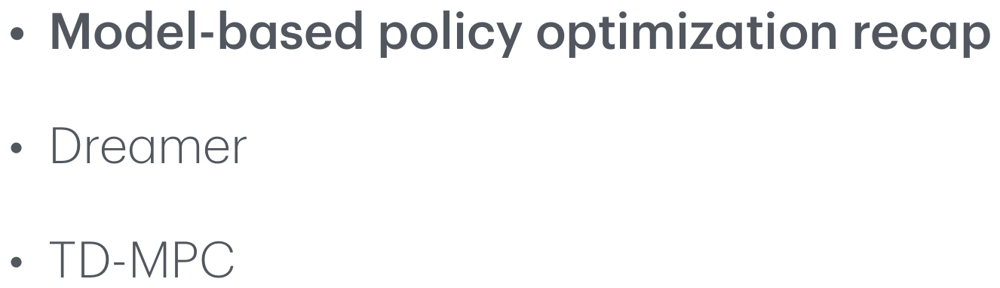
2. 모형 기반 정책 최적화 (Model-Based Policy Optimization)
장 구분 슬라이드(3쪽)의 제목은 Recap: Model-based policy optimization입니다. 10회차 마지막 부분에서 본 두 장의 슬라이드를 그대로 다시 보여 주며, 이번 강의 전반부(Dreamer)의 출발점을 깔아 둡니다.
2.1 핵심 아이디어: 모형으로 만든 롤아웃으로 데이터를 불린다
슬라이드 맨 위의 문장이 이 방법의 전부를 요약합니다.
Key idea: augment data with model-simulated roll-outs. (핵심 아이디어: 모형으로 시뮬레이션한 롤아웃으로 데이터를 불린다.)
모형 기반 강화학습(model-based RL)에서 학습된 모형 \(p_\phi(\mathbf{s}' \mid \mathbf{s}, \mathbf{a})\)를 쓰는 방법은 크게 두 가지였습니다 — 모형으로 행동 시퀀스를 직접 최적화하는 계획(planning)과, 모형으로 가짜 전이를 만들어 모형 없는 강화학습(model-free RL)의 학습 데이터로 쓰는 것. 이 절은 두 번째입니다. 실제 환경에서 모은 궤적 \(\mathbf{s}_1 \to \mathbf{s}_2 \to \cdots \to \mathbf{s}_6\)이 있을 때, 모형을 돌려 그 주변에 상상(imaginary) 전이를 덧붙이면 실제 상호작용 없이 데이터가 늘어납니다.
문제는 어디서부터, 얼마나 길게 상상할 것인가입니다. 슬라이드는 세 가지 선택지를 차례로 검토합니다.
| 선택지 | 문제 |
|---|---|
| 초기 상태에서 전체 궤적을 생성한다 | 모형이 긴 지평에서는 정확하지 않을 수 있다 |
| 초기 상태에서 부분 궤적을 생성한다 | 뒤쪽 상태들을 충분히 덮지 못할 수 있다 |
| 데이터에 있는 모든 상태에서 부분 궤적을 생성한다 | (슬라이드가 고른 답) |
- 첫째 선택지의 문제는 10회차에서 본 오차 누적입니다. 모형은 한 스텝 예측을 학습하지만, 롤아웃에서는 자신의 예측을 다음 입력으로 다시 넣습니다. 한 스텝의 작은 오차가 지평을 따라 쌓이면 궤적 뒤쪽은 실제와 동떨어진 상태가 됩니다.
- 둘째 선택지의 문제는 반대 방향입니다. 짧게만 굴리면 오차는 줄지만, 초기 상태 근처만 상상하게 되어 에피소드 후반부에 나오는 상태들에 대한 데이터는 늘어나지 않습니다.
- 셋째 선택지는 두 문제를 동시에 피합니다. 실제 데이터의 모든 상태를 출발점으로 삼으므로 상태 공간 전체를 고르게 덮고, 각 롤아웃은 짧게 끊으므로 오차가 쌓일 틈이 없습니다.
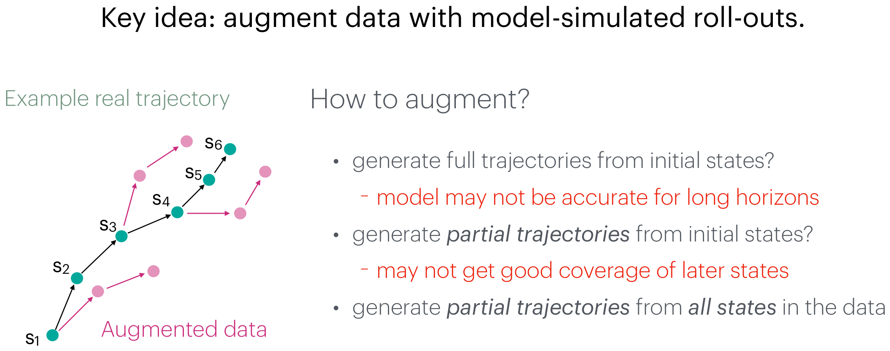
2.2 전체 알고리즘
셋째 선택지를 반복 학습 루프로 쓰면 다음 네 단계가 됩니다. 실제 데이터를 담는 버퍼 \(D_{\mathrm{env}}\)와 상상 데이터를 담는 버퍼 \(D_{\mathrm{model}}\)을 따로 둔다는 점이 핵심입니다.
- 현재 정책 \(\pi_\theta\)로 환경에서 데이터를 모아 \(D_{\mathrm{env}}\)에 추가한다.
- \(D_{\mathrm{env}}\)로 모형 \(p_\phi(\mathbf{s}' \mid \mathbf{s}, \mathbf{a})\)를 갱신한다.
- \(D_{\mathrm{env}}\)의 상태들에서 출발해, 모형 \(p_\phi\) 안에서 \(\pi_\theta\)로 상상 롤아웃을 모아 \(D_{\mathrm{model}}\)에 추가한다.
- \(D_{\mathrm{model}}\)로 정책 \(\pi_\theta\)(와 비평가 \(Q\))를 갱신한다.
그리고 1번으로 돌아갑니다. 슬라이드는 두 가지를 덧붙입니다.
- 4단계에는 모형 없는 강화학습 방법을 다양하게 쓸 수 있습니다. 4단계가 보는 것은 \((\mathbf{s}, \mathbf{a}, \mathbf{s}', r)\) 전이의 모음일 뿐이므로, 7회차의 SAC·TD3 같은 오프폴리시 행위자–비평가를 그대로 꽂아 넣을 수 있습니다.
- 정책 갱신에 \(D_{\mathrm{env}}\)를 추가로 쓸 수도 있습니다. 실제 전이는 모형 오차가 없는 가장 믿을 만한 데이터이므로 버릴 이유가 없습니다.
이 구조에서 모형은 정책을 직접 고르지 않습니다. 실제 상호작용 한 번으로 얻은 상태를 출발점 삼아 여러 개의 가상 전이를 만들어 내는 데이터 증폭기 역할만 합니다. 그래서 정책 학습 쪽은 모형 없는 알고리즘 가운데 익숙한 것을 그대로 쓰면서도, 실제 환경 스텝 하나당 훨씬 많은 경사 갱신을 할 수 있습니다. 이후 Dreamer가 바로 이 틀을 따릅니다.
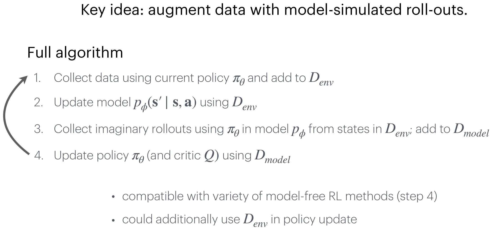
3. Dyna
장 구분 슬라이드(6쪽)는 Dreamer입니다. 그런데 Dreamer로 바로 들어가지 않고, 그 계보의 시작점인 Dyna부터 짚습니다. 슬라이드의 출처는 Sutton et al., Dyna, an integrated architecture for learning, planning, and reacting, ACM SIGART Bulletin, Vol. 2, Issue 4, 1991입니다.
3.1 모형이 있는 온라인 Q-학습
슬라이드의 부제는 “Online Q-learning with a model”입니다. 6회차의 Q-학습에 모형 학습과 모형을 이용한 추가 갱신을 끼워 넣은 형태입니다.
- 상태 \(\mathbf{s}\)에서 엡실론-탐욕(epsilon greedy)으로 행동 \(\mathbf{a}\)를 고르고, \((\mathbf{s}, \mathbf{a})\)를 \(D_{\mathrm{env}}\)에 저장한다.
- 환경 스텝: \((\mathbf{s}', r) \leftarrow p(\mathbf{s}', r \mid \mathbf{s}, \mathbf{a})\).
- \((\mathbf{s}, \mathbf{a}, \mathbf{s}', r)\)로 모형 \(p_\phi(\mathbf{s}' \mid \mathbf{s}, \mathbf{a})\)와 \(r_\phi(\mathbf{s}, \mathbf{a})\)를 갱신한다.
- Q 갱신: \[ Q(\mathbf{s}, \mathbf{a}) \leftarrow Q(\mathbf{s}, \mathbf{a}) + \alpha\, \mathbb{E}_{\mathbf{s}' \sim p_\phi,\, r \sim r_\phi} \Big[ r + \max_{\mathbf{a}'} Q(\mathbf{s}', \mathbf{a}') - Q(\mathbf{s}, \mathbf{a}) \Big] \]
- \(K\)번 반복한다.
- 5.1. \((\mathbf{s}, \mathbf{a}) \sim D_{\mathrm{env}}\)를 뽑는다.
- 5.2. 4번과 같은 Q 갱신을 한다.
3.2 갱신식 읽기
4번의 갱신식이 어디서 왔는지 단계별로 보겠습니다. (슬라이드는 할인율 \(\gamma\)를 생략해 적었습니다. 아래에서는 일반적인 형태로 \(\gamma\)를 넣어 유도하고, \(\gamma = 1\)로 두면 슬라이드의 식이 됩니다.)
1단계 (벨만 최적 방정식). 최적 Q-함수는 다음을 만족합니다.
\[ Q^*(\mathbf{s}, \mathbf{a}) = \mathbb{E}_{\mathbf{s}', r \sim p(\cdot \mid \mathbf{s}, \mathbf{a})} \Big[ r + \gamma \max_{\mathbf{a}'} Q^*(\mathbf{s}', \mathbf{a}') \Big] \]
2단계 (고정점을 향한 작은 걸음). 현재 추정치 \(Q\)가 이 방정식을 만족하지 않으면, 우변(표적값)과 좌변의 차이만큼 \(Q\)를 조금씩 옮깁니다. 학습률이 \(\alpha\)이면
\[ Q(\mathbf{s}, \mathbf{a}) \leftarrow Q(\mathbf{s}, \mathbf{a}) + \alpha \Big( \mathbb{E}\big[ r + \gamma \max_{\mathbf{a}'} Q(\mathbf{s}', \mathbf{a}') \big] - Q(\mathbf{s}, \mathbf{a}) \Big) \]
이고, \(Q(\mathbf{s}, \mathbf{a})\)는 기댓값 안의 확률변수가 아니므로 괄호 안으로 넣어 하나의 기댓값으로 쓸 수 있습니다. 괄호 안의 \(r + \gamma \max_{\mathbf{a}'} Q(\mathbf{s}', \mathbf{a}') - Q(\mathbf{s}, \mathbf{a})\)가 시간차 오차(TD error)입니다.
3단계 (기댓값을 무엇으로 계산하는가). 6회차의 Q-학습은 이 기댓값을 실제로 관측한 표본 하나 \((\mathbf{s}', r)\)로 근사했습니다. Dyna는 기댓값을 학습된 모형 \(p_\phi\), \(r_\phi\)에 대해 취합니다. 그래서 갱신식의 기댓값 아래첨자가 \(\mathbf{s}' \sim p_\phi,\, r \sim r_\phi\)입니다. 모형이 있으면 환경에 다시 묻지 않고도 같은 \((\mathbf{s}, \mathbf{a})\)에서의 기댓값을 언제든 계산(또는 표본 추출)할 수 있습니다.
4단계 (5번 반복의 의미). 바로 이 성질 덕분에 5번이 가능해집니다. 과거에 방문했던 \((\mathbf{s}, \mathbf{a})\)를 \(D_{\mathrm{env}}\)에서 다시 뽑아, 환경과 상호작용하지 않고 모형만으로 Q를 \(K\)번 더 갱신합니다. 실제 스텝 1번당 Q 갱신이 \(1 + K\)번 일어나는 셈입니다.
원 논문 제목의 세 단어를 알고리즘의 단계에 대응시켜 읽어 볼 수 있습니다.
- 반응(reacting): 1–2번, 현재 Q로 행동을 고르고 환경과 상호작용
- 학습(learning): 3번(실제 전이로 모형 학습)과 4번(방금 방문한 \((\mathbf{s}, \mathbf{a})\)에 대한 Q 갱신. 슬라이드는 이 갱신의 기댓값도 학습된 모형 \(p_\phi, r_\phi\)로 적습니다)
- 계획(planning): 5번, 모형으로 만든 경험으로 Q를 추가 갱신
여기서 “계획”은 10회차의 MPC처럼 행동 시퀀스를 최적화하는 것이 아니라, 모형으로 만든 가상 경험으로 가치 함수를 갱신하는 것을 뜻합니다.
5.1번이 상태만이 아니라 상태–행동 쌍을 \(D_{\mathrm{env}}\)에서 뽑는다는 점도 눈여겨볼 만합니다. 실제로 시도해 본 행동에 대해서만 모형을 질의하므로, 모형이 한 번도 학습하지 못한 행동에서 엉뚱한 예측을 할 위험이 줄어듭니다.
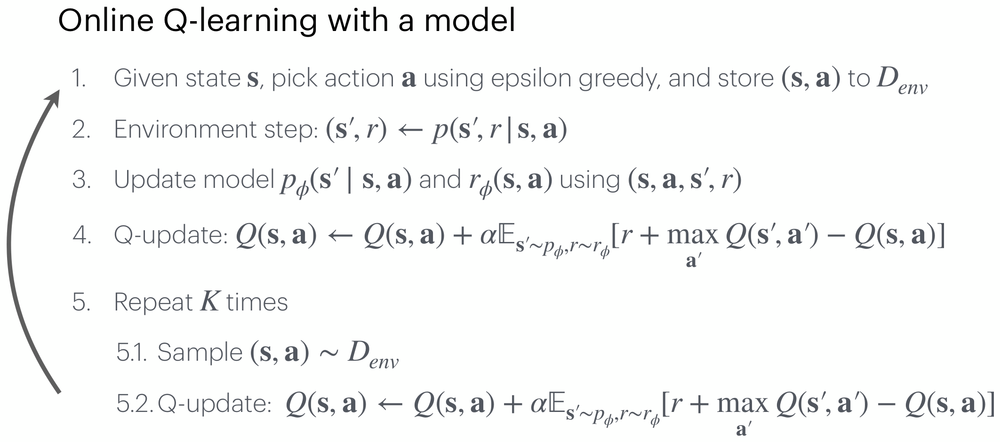
4. Dyna 방식 모형 기반 강화학습 (Dyna-Style Model-Based RL)
3절의 Dyna는 표 형식 Q-학습에 묶여 있었습니다. 이 절은 그 뼈대를 모형 없는 강화학습 전반으로 일반화합니다. 슬라이드의 부제는 “General model-free RL with a model”입니다.
- 현재 정책 \(\pi_\theta\)로 데이터를 모아 \(D_{\mathrm{env}}\)에 추가한다.
- \(D_{\mathrm{env}}\)로 모형 \(p_\phi(\mathbf{s}' \mid \mathbf{s}, \mathbf{a})\)와 \(r_\phi(\mathbf{s}, \mathbf{a})\)를 갱신한다.
- \(K\)번 반복한다.
- 3.1. \(\mathbf{s} \sim D_{\mathrm{env}}\)를 뽑는다.
- 3.2. 행동 \(\mathbf{a}\)를 고른다 (\(D_{\mathrm{env}}\)에서, 또는 \(\pi_\theta\)로, 또는 무작위로).
- 3.3. \(\mathbf{s}' \sim p_\phi(\cdot \mid \mathbf{s}, \mathbf{a})\)와 \(r \sim r_\phi(\mathbf{s}, \mathbf{a})\)를 시뮬레이션한다.
- 3.4. \((\mathbf{s}, \mathbf{a}, \mathbf{s}', r)\)에 모형 없는 강화학습을 실행한다.
- 3.5. (선택) 3.2–3.4의 모형 기반 스텝을 \(N\)번 더 밟는다.
3절과 비교하면 네 군데가 달라졌습니다.
| 항목 | Dyna (3절) | Dyna 방식 (4절) |
|---|---|---|
| 뽑는 것 | 상태–행동 쌍 \((\mathbf{s}, \mathbf{a}) \sim D_{\mathrm{env}}\) | 상태 \(\mathbf{s} \sim D_{\mathrm{env}}\) |
| 행동 | 데이터의 행동 | 데이터, 현재 정책, 무작위 중 선택 (3.2) |
| 학습 방법 | 표 형식 Q 갱신 | 모형 없는 강화학습이면 무엇이든 (3.4) |
| 상상 길이 | 1스텝 | 1스텝 + 선택적으로 \(N\)스텝 더 (3.5) |
3.5번이 2절의 셋째 선택지, 곧 “데이터의 모든 상태에서 부분 궤적을 생성한다”를 그대로 구현한 것입니다. \(N\)이 작으면 오차 누적이 적고, \(N\)을 키우면 더 먼 상태까지 상상하게 됩니다. 슬라이드는 이 방식의 장점을 두 줄로 요약합니다.
- 짧은 상상 롤아웃만 있으면 된다 → 모형 오차가 쌓이지 않습니다.
- 그래도 다양한 상태를 본다 → 출발점이 실제 데이터 전체이므로 상태 공간을 고르게 덮습니다.
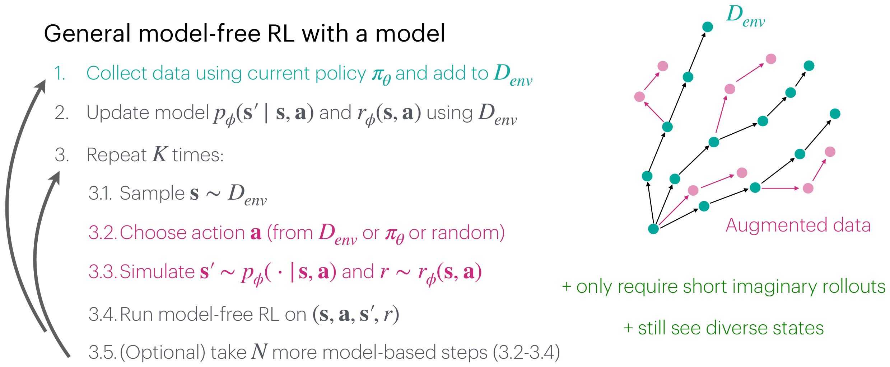
5. Dreamer
슬라이드의 출처는 Hafner et al., Dream to Control: Learning Behaviors by Latent Imagination, ICLR 2020입니다. 슬라이드는 Dreamer를 한 문장으로 소개합니다.
The very first working Dyna-style model-based RL implementation on pixel (픽셀 관측에서 처음으로 제대로 작동한 Dyna 방식 모형 기반 강화학습 구현)
4절의 Dyna 방식은 상태 \(\mathbf{s}\)가 관절 각도나 속도 같은 저차원 벡터일 때는 자연스럽습니다. 그러나 관측이 이미지라면 이야기가 달라집니다. 다음 이미지를 픽셀 단위로 예측하는 모형은 크고 느리며, 예측한 이미지를 다시 입력으로 넣어 롤아웃을 이어 가면 오차가 금세 쌓입니다. Dreamer의 답은 이미지 대신 압축된 잠재 상태 위에서 상상하는 것입니다. 알고리즘은 세 단계의 반복으로 이루어집니다.
| 단계 | 슬라이드의 이름 | 하는 일 |
|---|---|---|
| ① | World model learning | 이미지 관측을 잠재 상태로 부호화하고, 잠재 상태의 시간 변화를 학습한다 (6–7절) |
| ② | Learning value and policy | 잠재 상태 위에서 가치 함수와 정책을 학습한다 (8절) |
| ③ | Environment interaction | 학습한 정책으로 실제 환경과 상호작용해 새 데이터를 모은다 (8.4절) |
2.2절의 네 단계와 비교하면, ①이 모형 갱신(2단계), ②가 상상 롤아웃 생성과 정책 갱신(3–4단계), ③이 데이터 수집(1단계)에 대응합니다.
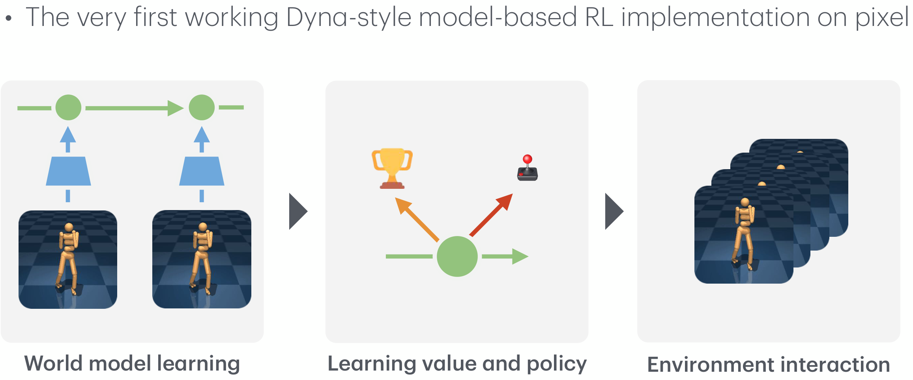
6. 잠재 상태를 가진 세계 모형 (World Model with Latent States)
Dreamer의 세계 모형(world model)은 네 부품으로 이루어집니다. 슬라이드 왼쪽의 범례가 각 부품의 기호입니다.
| 기호 | 부품 | 역할 |
|---|---|---|
| 파란 사다리꼴 | encode images | 이미지 관측 \(\mathbf{o}_t\)를 잠재 공간으로 부호화 |
| 초록 원 | compute states | 이전 잠재 상태, 이전 행동, 현재 관측을 합쳐 잠재 상태 계산 |
| 사과 | predict rewards | 잠재 상태에서 보상 \(\hat{r}_t\) 예측 |
| 회색 사다리꼴 | reconstruction | 잠재 상태에서 관측 \(\hat{\mathbf{o}}_t\) 재구성 |
그림을 시간 순서대로 따라가면 다음과 같습니다.
- 관측 \(\mathbf{o}_1\)이 인코더를 거쳐 첫 잠재 상태가 됩니다.
- 그 잠재 상태에서 보상 \(\hat{r}_1\)을 예측하고, 이미지 \(\hat{\mathbf{o}}_1\)을 재구성합니다.
- 행동 \(\mathbf{a}_1\)이 초록 화살표에 합류해, 다음 잠재 상태로 넘어갑니다. 다음 잠재 상태는 새 관측 \(\mathbf{o}_2\)의 부호화도 함께 받습니다.
- 같은 과정이 \(t = 2, 3\)에서 반복됩니다.
무엇이 학습 신호가 되는가. 잠재 상태는 아무도 정답을 알려 주지 않는 변수입니다. Dreamer는 잠재 상태가 (i) 관측을 다시 그려 낼 수 있을 만큼 정보를 담고 (ii) 보상을 예측할 수 있도록 학습시킵니다. 재구성 오차와 보상 예측 오차가 작아지려면 잠재 상태가 이미지의 핵심 정보를 압축하고 있어야 하기 때문입니다. 14절 요약 슬라이드가 “표현 학습은 대부분 관측 재구성에 의존한다”고 정리하는 것이 바로 이 구조입니다.
한 번 잠재 상태를 얻고 나면, 다음 잠재 상태를 예측하는 데 이미지는 필요 없습니다. 초록 화살표(잠재 상태 → 잠재 상태)만 따라가면 되므로, 수백 스텝을 상상해도 고해상도 이미지를 한 장도 생성하지 않습니다. 회색 재구성 디코더는 학습할 때 잠재 상태를 정보가 풍부하게 만드는 데만 쓰이고, 8절의 행동 학습에서는 쓰이지 않습니다.
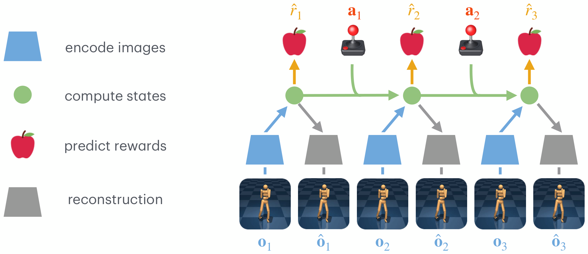
7. 장기 상상 롤아웃 (Long-Term Imaginary Rollouts)
세계 모형이 얼마나 먼 미래까지 믿을 만하게 상상하는지 보여 주는 슬라이드입니다. 두 개의 과제 각각에 대해 위 줄(True)은 실제로 일어난 일, 아래 줄(Model)은 모형이 상상한 결과입니다.
- Input Images (1–5): 처음 다섯 프레임은 모형에게 실제 관측을 보여 주는 구간입니다. 두 줄이 같아야 정상입니다.
- Future Outcomes (6–50): 그다음부터 모형은 관측 없이 잠재 상태만 굴려 미래를 상상하고, 그 잠재 상태를 디코더로 이미지로 바꾸어 보여 줍니다. 열은 6, 10, 15, …, 50번째 프레임입니다.
관찰. 위쪽의 관절 로봇 과제에서는 45번째 프레임 무렵까지 모형이 그린 자세가 실제 자세를 거의 그대로 따라가지만, 마지막 50번째 프레임에서는 실제(오른쪽 위로 비스듬히 기운 자세)와 모형(거의 곧게 선 자세)이 눈에 띄게 어긋납니다. 아래쪽의 1인칭 3D 환경에서도 벽의 배치와 분홍색 물체의 위치가 오래 유지되지만, 30번째 프레임에서는 실제 화면 오른쪽 가장자리에 살짝 걸친 초록색 물체를 모형이 화면 오른쪽 아래에 훨씬 크게 그리는 등 세부가 어긋나는 부분이 보입니다. 즉 잠재 공간에서의 상상은 수십 스텝 동안 큰 흐름을 유지할 만큼 정확하지만 완벽하지는 않습니다. Dreamer가 8절에서 상상 길이를 \(H\)로 제한하고 그 너머를 가치 함수에 맡기는 이유가 여기에 있습니다.
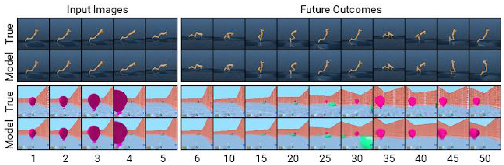
8. 잠재 상상으로 행동 학습하기 (Learning Behaviors by Latent Imagination)
세계 모형이 준비되었으면, 이제 행동을 학습할 차례입니다. 논문 제목의 부제이기도 한 “잠재 상상으로 행동 학습하기”를 슬라이드 세 장이 단계적으로 쌓아 올리고, 제목 없는 15쪽이 이를 알고리즘으로 정리합니다.
8.1 가치망과 정책망
첫 슬라이드는 행동 학습에 쓰는 두 신경망을 소개합니다.
- 가치망(value network) \(v_\psi\): 잠재 상태에서 앞으로 받을 반환값을 예측합니다 (트로피).
- 정책망(policy network) \(q_\phi(\mathbf{a} \mid \mathbf{s})\): 잠재 상태에서 행동을 고릅니다 (조이스틱).
두 신경망 모두 잠재 상태만 입력으로 받는다는 점이 중요합니다. 실제 환경에서 행동할 때도, 상상 속에서 학습할 때도 같은 잠재 상태를 쓰므로, 상상 속에서 배운 정책을 그대로 실제 환경에 가져갈 수 있습니다. 4회차의 표현으로는 정책망이 행위자(actor), 가치망이 비평가(critic)입니다.
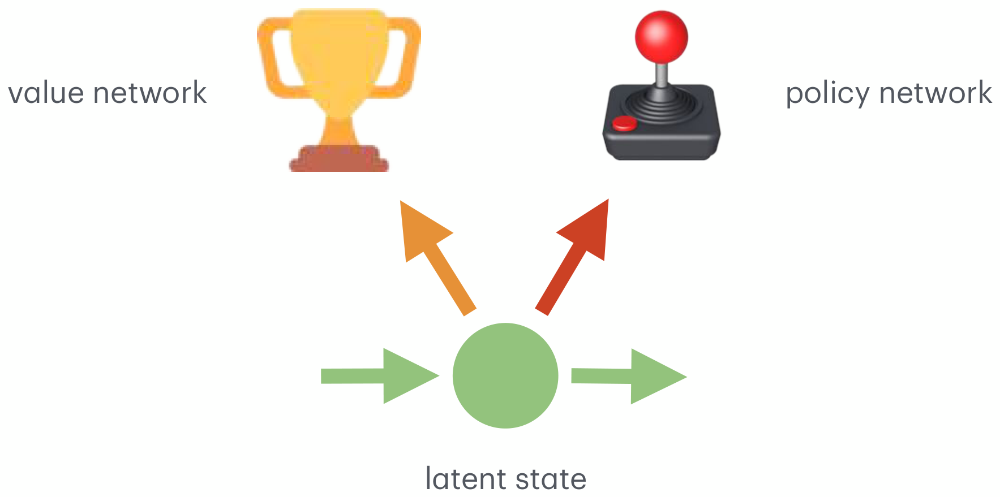
8.2 상상 속에서 앞을 내다보기
둘째 슬라이드는 이 두 신경망으로 상상 궤적을 만드는 과정을 보여 줍니다. 범례에 새로 “imagine ahead”(조이스틱)와 “predict values”(트로피)가 추가되었습니다.
- 실제 관측은 \(\mathbf{o}_1\) 하나뿐입니다. 이를 부호화해 첫 잠재 상태를 얻습니다.
- 정책망이 행동 \(\hat{\mathbf{a}}_1\)을 고릅니다 (빨간 화살표).
- 세계 모형의 전이 부분이 \(\hat{\mathbf{a}}_1\)을 받아 다음 잠재 상태를 상상합니다 (초록 화살표). 관측 \(\mathbf{o}_2\)는 쓰지 않습니다.
- 새 잠재 상태에서 가치 \(\hat{v}_2\)와 보상 \(\hat{r}_2\)를 예측하고, 다시 정책망이 \(\hat{\mathbf{a}}_2\)를 고릅니다.
- 이를 반복해 \(\hat{v}_3, \hat{r}_3, \ldots\)을 얻습니다.
6절의 그림과 비교하면 차이가 분명합니다. 6절에서는 매 시점 실제 관측이 아래에서 들어왔지만, 여기서는 첫 관측 이후로 이미지가 하나도 없습니다. 행동에도 모자 기호(\(\hat{\mathbf{a}}\))가 붙어 있는데, 데이터에 기록된 행동이 아니라 정책이 상상 속에서 고른 행동이라는 뜻입니다.
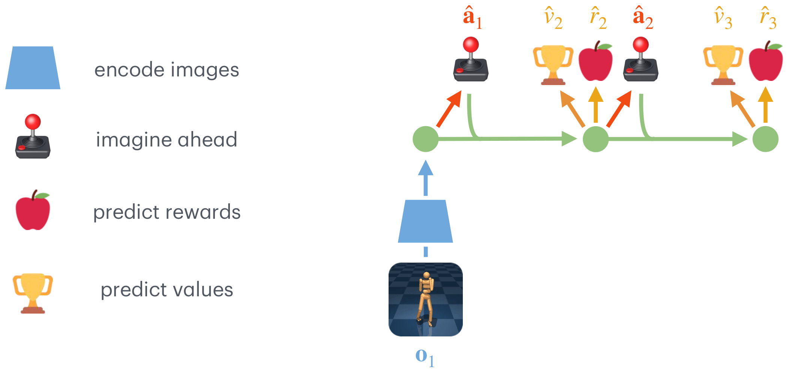
8.3 상상 궤적을 거슬러 올라가는 경사
셋째 슬라이드는 같은 그림 위에 굵은 검은 화살표를 덧그립니다. 화살표의 방향이 앞의 그림과 반대입니다.
- 예측된 가치 \(\hat{v}_2, \hat{v}_3\)와 보상 \(\hat{r}_2, \hat{r}_3\)에서 잠재 상태로 내려옵니다.
- 셋째 잠재 상태에서 둘째 잠재 상태로, 둘째에서 다시 첫 시점 쪽으로 거슬러 갑니다.
- 그리고 각 잠재 상태를 만든 행동 \(\hat{\mathbf{a}}_1, \hat{\mathbf{a}}_2\)로 올라갑니다.
이것은 경사(gradient)가 흐르는 경로입니다. 상상 궤적 전체가 미분 가능한 신경망들(정책망, 전이 모형, 보상 예측기, 가치망)의 합성으로 이루어져 있으므로, “예측된 보상과 가치의 합”을 정책 파라미터에 대해 연쇄 법칙으로 직접 미분할 수 있습니다. 행동 \(\hat{\mathbf{a}}_1\)을 조금 바꾸면 다음 잠재 상태가 어떻게 바뀌고, 그 결과 미래의 보상과 가치가 얼마나 늘어나는지를 모형을 통해 계산하는 것입니다. 8.4절의 행위자 갱신식이 바로 이 경사를 씁니다.
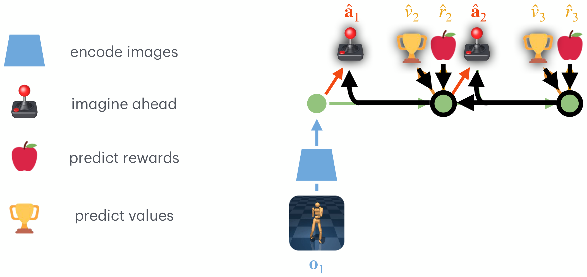
8.4 알고리즘 1: Dreamer
제목 없는 15쪽은 원 논문의 알고리즘 상자를 그대로 옮긴 것입니다. 슬라이드 왼쪽에는 각 부분이 무엇인지 색깔 있는 이름표가 붙어 있습니다 — Update model, Generate imaginary data, Train actor/critic, Collect new real data.
2–4절에서 \(\mathbf{s}\)는 환경의 상태였습니다. Dreamer의 알고리즘 상자에서는 환경이 주는 것이 관측 \(o_t\)이고, \(s_t\)는 세계 모형이 계산한 잠재(모형) 상태입니다. 또 이 상자의 \(\theta\)는 세계 모형, \(\phi\)는 정책(행위자), \(\psi\)는 가치망(비평가)의 파라미터이며, 2절에서 모형 파라미터를 \(\phi\), 정책 파라미터를 \(\theta\)로 썼던 것과 역할이 뒤바뀌어 있습니다. 슬라이드의 원 표기를 그대로 따르겠습니다.
모형 구성 요소 (Model components)
| 이름 | 분포 | 의미 |
|---|---|---|
| Representation | \(p_\theta(s_t \mid s_{t-1}, a_{t-1}, o_t)\) | 이전 잠재 상태·행동과 현재 관측으로 잠재 상태 계산 (6절의 인코더 + 초록 원) |
| Transition | \(q_\theta(s_t \mid s_{t-1}, a_{t-1})\) | 관측 없이 다음 잠재 상태 예측 (8.2절의 상상) |
| Reward | \(q_\theta(r_t \mid s_t)\) | 잠재 상태에서 보상 예측 |
| Action | \(q_\phi(a_t \mid s_t)\) | 정책 (행위자) |
| Value | \(v_\psi(s_t)\) | 가치 함수 (비평가) |
Representation과 Transition의 차이가 관측 \(o_t\)의 유무 하나뿐이라는 점이 핵심입니다. 실제 데이터가 있을 때는 Representation으로 관측을 반영한 잠재 상태를 만들고, 상상할 때는 Transition만으로 다음 잠재 상태를 예측합니다.
하이퍼파라미터 (Hyper parameters): 시드 에피소드 수 \(S\), 수집 간격 \(C\), 배치 크기 \(B\), 시퀀스 길이 \(L\), 상상 지평 \(H\), 학습률 \(\alpha\).
알고리즘의 흐름. 데이터셋 \(\mathcal{D}\)를 무작위 시드 에피소드 \(S\)개로 초기화하고, 신경망 파라미터 \(\theta, \phi, \psi\)를 무작위로 초기화한 뒤, 수렴할 때까지 다음을 반복합니다.
(1) 갱신 단계 \(c = 1, \dots, C\)마다:
- 동역학 학습 (Dynamics learning) — Update model
- 길이 \(L\)의 데이터 시퀀스 \(B\)개 \(\{(a_t, o_t, r_t)\}_{t=k}^{k+L} \sim \mathcal{D}\)를 뽑는다.
- 모형 상태 \(s_t \sim p_\theta(s_t \mid s_{t-1}, a_{t-1}, o_t)\)를 계산한다.
- 표현 학습(representation learning)으로 \(\theta\)를 갱신한다. (구체적인 손실은 슬라이드에 없으며, 6절에서 본 재구성과 보상 예측이 그 학습 신호입니다.)
- 행동 학습 (Behavior learning) — Generate imaginary data / Train actor/critic
- 각 \(s_t\)에서 상상 궤적 \(\{(s_\tau, a_\tau)\}_{\tau=t}^{t+H}\)를 만든다.
- 보상 \(\mathrm{E}\big(q_\theta(r_\tau \mid s_\tau)\big)\)와 가치 \(v_\psi(s_\tau)\)를 예측한다.
- 원 논문의 식 6으로 가치 추정치 \(\mathrm{V}_\lambda(s_\tau)\)를 계산한다.
- 행위자 갱신: \(\phi \leftarrow \phi + \alpha \nabla_\phi \sum_{\tau=t}^{t+H} \mathrm{V}_\lambda(s_\tau)\)
- 비평가 갱신: \(\psi \leftarrow \psi - \alpha \nabla_\psi \sum_{\tau=t}^{t+H} \frac{1}{2} \big\lVert v_\psi(s_\tau) - \mathrm{V}_\lambda(s_\tau) \big\rVert^2\)
(2) 환경 상호작용 (Environment interaction) — Collect new real data
- \(o_1 \leftarrow\)
env.reset() - 시간 단계 \(t = 1, \dots, T\)마다:
- 지금까지의 이력으로 \(s_t \sim p_\theta(s_t \mid s_{t-1}, a_{t-1}, o_t)\)를 계산한다.
- 행동 모형(action model), 곧 정책 \(q_\phi\)로 \(a_t \sim q_\phi(a_t \mid s_t)\)를 계산한다.
- 행동에 탐험 잡음(exploration noise)을 더한다.
- \(r_t, o_{t+1} \leftarrow\)
env.step(\(a_t\))
- 경험을 데이터셋에 추가한다: \(\mathcal{D} \leftarrow \mathcal{D} \cup \{(o_t, a_t, r_t)_{t=1}^{T}\}\).
상상 궤적의 시작점
“각 \(s_t\)에서” 상상한다는 말에 주목합시다. 동역학 학습에서 뽑은 \(B\)개 시퀀스의 모든 시점에서 얻은 잠재 상태가 상상의 출발점이 됩니다. 2절의 셋째 선택지 — 데이터의 모든 상태에서 짧은 부분 궤적을 생성한다 — 를 잠재 공간에서 그대로 실행하는 것입니다.
가치 추정치 \(\mathrm{V}_\lambda\)
슬라이드는 \(\mathrm{V}_\lambda\)를 원 논문의 “Equation 6”으로만 가리키고 식을 싣지 않습니다. 다만 아래첨자 \(\lambda\)와 “보상과 가치를 예측한 뒤 계산한다”는 순서로 보아, 상상 지평 안의 예측 보상과 그 끝의 예측 가치를 섞어 만든 \(\lambda\)-반환값 계열의 추정치입니다. 표준적인 \(\lambda\)-반환값의 구성을 짧게 정리하면 다음과 같습니다.
- \(n\)-스텝 반환값: 보상을 \(n\)개까지 더하고, 그 뒤는 가치 함수로 대신합니다. \[ \mathrm{V}^{n}(s_\tau) = \sum_{k=\tau}^{\tau+n-1} \gamma^{k-\tau} r_k + \gamma^{n} v(s_{\tau+n}) \] \(n\)이 작으면 가치 함수의 편향을 많이 물려받고, \(n\)이 크면 보상 표본의 분산을 많이 물려받습니다.
- \(\lambda\)-반환값: 여러 \(n\)의 반환값을 가중치 \((1-\lambda)\lambda^{n-1}\)로 섞습니다. \[ \mathrm{V}_\lambda(s_\tau) = (1-\lambda) \sum_{n=1}^{\infty} \lambda^{n-1}\, \mathrm{V}^{n}(s_\tau) \] 가중치의 합이 \((1-\lambda)\sum_{n \ge 1} \lambda^{n-1} = 1\)이므로 가중평균입니다. 상상 궤적은 길이 \(H\)에서 끝나므로, 실제 계산에서는 \(H\)를 넘는 항들의 가중치를 마지막 반환값에 몰아 주는 식으로 자릅니다.
\(\lambda\)로 편향과 분산 사이를 조절한다는 발상은 5회차의 GAE와 같습니다.
비평가 갱신의 유도
비평가 손실은 \(\mathrm{V}_\lambda(s_\tau)\)를 표적값으로 하는 회귀입니다. 한 항만 떼어 \(\psi\)로 미분하면, 표적값을 상수로 취급할 때
\[ \nabla_\psi\, \frac{1}{2} \big( v_\psi(s_\tau) - \mathrm{V}_\lambda(s_\tau) \big)^2 = \big( v_\psi(s_\tau) - \mathrm{V}_\lambda(s_\tau) \big)\, \nabla_\psi v_\psi(s_\tau) \]
입니다. 갱신식의 부호가 \(-\)이므로 이는 경사 하강이고, 예측 \(v_\psi\)가 표적보다 크면 줄이고 작으면 키웁니다. (\(\mathrm{V}_\lambda\) 안에도 \(v_\psi\)가 들어 있지만, 6회차의 Q-학습에서 표적값을 고정된 값으로 다루었던 것과 같은 관례로 미분하지 않는 상수로 취급합니다.)
행위자 갱신의 유도
행위자 갱신은 부호가 \(+\)인 경사 상승입니다. 상상 궤적 위의 가치 추정치 합을 키우는 방향으로 \(\phi\)를 움직입니다. 이 경사가 무엇인지, 가장 간단한 한 스텝 경우로 풀어 보겠습니다.
1단계 (한 스텝 상상). 잠재 상태 \(s_t\)에서 정책이 \(a_t\)를 고르고, 전이 모형이 다음 잠재 상태를 냅니다.
\[ a_t = g_\phi(s_t, \epsilon), \qquad s_{t+1} = f_\theta(s_t, a_t) \]
여기서 \(g_\phi\)는 정책 \(q_\phi(a_t \mid s_t)\)에서 표본을 뽑는 과정을 잡음 \(\epsilon\)과 파라미터의 결정적 함수로 쓴 것이고, \(f_\theta\)는 전이 모형을 같은 방식으로 쓴 것입니다(전이의 잡음 인수는 표기에서 생략했습니다). (표본 추출을 이렇게 미분 가능한 함수로 바꾸어 쓰는 것을 재매개변수화(reparameterization)라고 하며, 7회차의 SAC에서도 같은 기법이 등장했습니다.)
2단계 (목적함수). 보충 상자의 \(n\)-스텝 반환값에서 \(n = 1\)인 경우를 목적함수로 둡니다. 보상 모형 \(q_\theta(r_t \mid s_t)\)가 같은 시점의 잠재 상태에서 보상을 예측하므로, 현재 시점의 예측 보상과 다음 시점의 예측 가치의 합입니다.
\[ J(\phi) = \mathrm{V}^{1}(s_t) = \hat{r}(s_t) + \gamma\, v_\psi(s_{t+1}) \]
3단계 (연쇄 법칙). \(\hat{r}(s_t)\)는 \(\phi\)에 의존하지 않고, 나머지 항은 \(s_{t+1}\)을 거쳐서만 \(\phi\)에 의존하므로,
\[ \nabla_\phi J = \gamma\, \frac{\partial v_\psi}{\partial s_{t+1}} \cdot \frac{\partial f_\theta(s_t, a_t)}{\partial a_t} \cdot \frac{\partial g_\phi(s_t, \epsilon)}{\partial \phi} \]
입니다. 세 인수는 각각 “다음 잠재 상태가 좋아지면 가치가 얼마나 느는가”, “행동을 바꾸면 다음 잠재 상태가 어떻게 바뀌는가”, “파라미터를 바꾸면 행동이 어떻게 바뀌는가”이며, 8.3절에서 가치 아이콘에서 잠재 상태로 내려와 행동으로 올라가는 검은 화살표가 이 한 스텝 경로입니다. 보상을 통한 경로는 두 스텝(\(\mathrm{V}^{2}\)의 \(\gamma\, \hat{r}(s_{t+1})\))부터 나타나며, \(\hat{r}_2\)에서 둘째 잠재 상태로 내려오는 화살표가 그것입니다. 지평이 \(H\)이면 여기에 상태 사이의 야코비안 \(\partial s_{k+1} / \partial s_k = \partial f_\theta / \partial s + (\partial f_\theta / \partial a)(\partial g_\phi / \partial s)\)가 곱해지고, 각 시점의 행동 \(a_k\)를 통한 \(\partial g_\phi / \partial \phi\) 기여가 모두 더해집니다. 셋째 잠재 상태에서 둘째로 가는 검은 화살표가 이 상태 간 야코비안에 해당합니다.
4단계 (의미). 이 경사는 3회차의 정책 경사(REINFORCE)처럼 반환값의 표본에 로그 확률의 경사를 곱하는 방식이 아니라, 학습된 동역학을 통해 반환값을 직접 미분한 것입니다. 이것이 가능한 이유는 상상 궤적 전체가 미분 가능한 모형 안에 있기 때문이며, 실제 환경에서는 불가능한 일입니다. 행위자 갱신 동안 모형 파라미터 \(\theta\)와 가치 파라미터 \(\psi\)는 바뀌지 않고, 경사 계산의 통로로만 쓰입니다.
환경 상호작용
마지막 블록은 학습한 정책으로 실제 데이터를 모읍니다. 매 시점 실제 관측 \(o_t\)를 Representation에 넣어 잠재 상태를 갱신하고(관측이 있으므로 Transition이 아니라 Representation을 씁니다), 정책에서 뽑은 행동에 탐험 잡음을 더해 실행합니다. 모은 에피소드는 \(\mathcal{D}\)에 추가되어 다음 동역학 학습에 쓰입니다.
| 2.2절의 단계 | Dreamer의 대응 |
|---|---|
| 1. 실제 데이터 수집 | Environment interaction: 정책 + 탐험 잡음으로 에피소드 수집 |
| 2. 모형 갱신 | Dynamics learning: 재구성·보상 예측으로 \(\theta\) 학습 |
| 3. 상상 롤아웃 생성 | 데이터의 모든 잠재 상태 \(s_t\)에서 길이 \(H\)의 상상 궤적 |
| 4. 정책·비평가 갱신 | \(\mathrm{V}_\lambda\)로 비평가 회귀, 동역학을 통한 경사로 행위자 갱신 |
상상 데이터를 별도 버퍼에 쌓지 않고 만들자마자 행위자·비평가 갱신에 쓴다는 점, 그리고 모든 것이 잠재 공간 안에서 일어난다는 점이 2절의 일반 형태와 다릅니다.
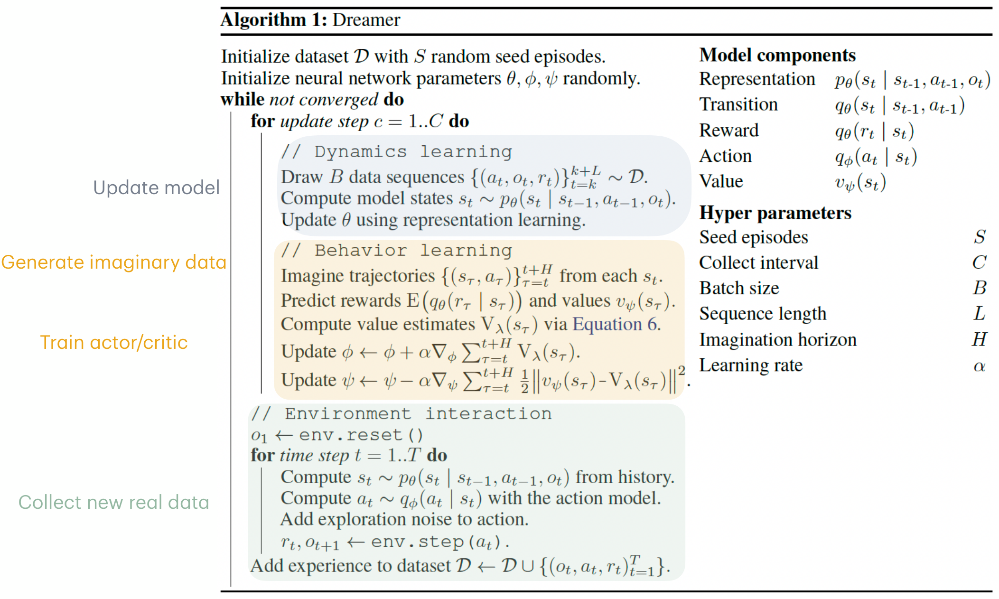
env.reset()과 env.step으로 \(T\)스텝 동안 정책에 탐험 잡음을 더해 행동하고 경험을 \(\mathcal{D}\)에 추가합니다. 오른쪽에는 다섯 모형 구성 요소(Representation, Transition, Reward, Action, Value)의 분포와 여섯 하이퍼파라미터(\(S, C, B, L, H, \alpha\))가 정리되어 있습니다. 모형 갱신, 상상 데이터 생성, 행위자·비평가 학습, 실제 데이터 수집이라는 2절의 네 단계가 한 알고리즘 안에 어떻게 배치되는지를 보여 주는 슬라이드입니다.9. 결과: DreamerV1 (Results: DreamerV1)
결과 슬라이드 네 장이 Dreamer의 세 버전을 차례로 보여 줍니다. 첫 장은 DreamerV1이 다룬 과제들의 장면입니다 (출처: Hafner et al., ICLR 2020).
- 위 줄 — 체크무늬 바닥의 연속 제어 과제: Sparse Cartpole, Acrobot Swingup, Hopper Hop, Walker Run, Quadruped Run
- 아래 줄: Boxing, Freeway, Frostbite (아타리 게임 화면), Collect Objects, Watermaze (1인칭 3D 환경)
모든 과제에서 에이전트가 받는 입력은 이 화면 이미지입니다. 관절 각도나 물체 좌표 같은 저차원 상태는 주어지지 않습니다.
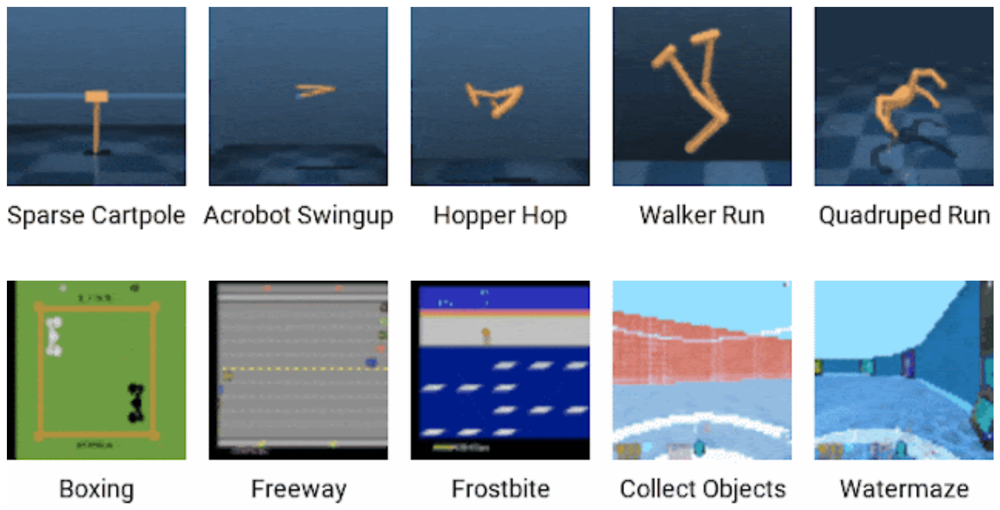
10. 결과: 연속 환경에서의 DreamerV1 (Results: DreamerV1 on Continuous Envs)
20개의 연속 제어 과제에서 네 방법의 에피소드 반환값(최대 1000)을 비교한 막대그래프입니다. 범례 위에는 비교 대상(PlaNet, D4PG, A3C)의 계열이 작은 글씨로 적혀 있습니다.
| 방법 | 계열 | 환경 스텝 | 비고 |
|---|---|---|---|
| Dreamer (파랑) | 모형 기반 | \(5 \times 10^6\) | 픽셀 입력 |
| PlaNet (초록) | 모형 기반 | \(5 \times 10^6\) | 픽셀 입력 |
| D4PG (주황) | 오프폴리시 | \(1 \times 10^8\) | |
| A3C (빨강) | 온폴리시 | \(1 \times 10^8\) | proprio, 곧 이미지가 아닌 고유 감각 상태 입력 |
슬라이드는 Dreamer, D4PG, A3C의 스텝 수에 연한 주황 바탕을 칠해 데이터 양의 차이를 강조합니다. D4PG와 A3C는 Dreamer보다 20배 많은 환경 스텝을 썼습니다.
읽을 거리.
- 과제는 Dreamer의 점수 순으로 정렬되어 있습니다. Dreamer는 왼쪽 17개 과제에서 대략 810–980점을 얻고, 오른쪽 끝의 Finger Spin(약 500), Hopper Hop과 Acrobot Swingup(각각 약 370)에서만 크게 떨어집니다.
- 같은 데이터 양을 쓴 모형 기반 선행 연구 PlaNet(초록)은 대부분의 과제에서 Dreamer보다 크게 낮습니다.
- D4PG(주황)는 여러 과제에서 Dreamer와 비슷하거나 더 높지만, 20배의 환경 스텝을 쓴 결과입니다. A3C(빨강)는 고유 감각 상태를 받고도 대부분의 과제에서 낮습니다. Quadruped Walk와 Quadruped Run에는 두 방법의 결과가 n/a로 비어 있습니다.
슬라이드 아래의 결론은 다음과 같습니다.
First time model-based RL outperforms model-free RL on pixels (픽셀 입력에서 모형 기반 강화학습이 모형 없는 강화학습을 처음으로 넘어섰다)
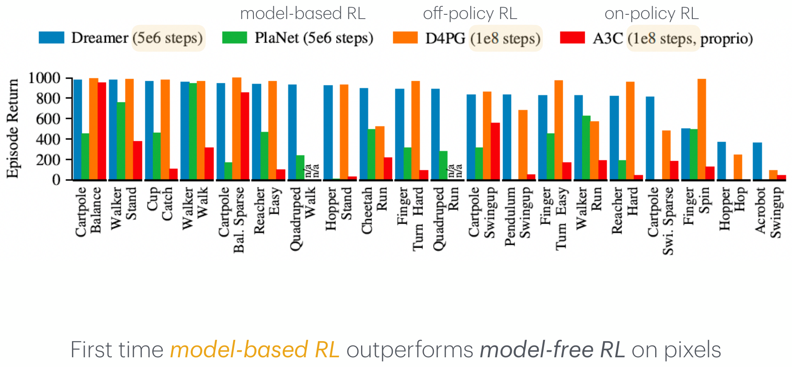
11. 결과: 이산 환경에서의 DreamerV2 (Results: DreamerV2 on Discrete Envs)
DreamerV1은 연속 제어에서는 강했지만 이산 행동의 아타리 게임에서는 약했습니다. 후속작 DreamerV2의 결과입니다 (출처: Hafner et al., Mastering Atari with Discrete World Models, ICLR 2021).
막대그래프 “Atari Performance”의 세로축에는 이름이 없지만, 1.0 높이에 “Human Gamer” 가로선이 그어져 있어 사람 게이머의 점수를 1로 둔 정규화 점수로 읽힙니다. 막대의 높이를 대략 읽으면 다음과 같습니다.
| 방법 | 계열 | 점수 (약) |
|---|---|---|
| DreamerV2 | 모형 기반 방법 | 2.15 |
| Rainbow | 모형 없는 방법 | 1.47 |
| IQN | 모형 없는 방법 | 1.29 |
| DQN | 모형 없는 방법 | 0.65 |
| DreamerV1 | 모형 기반 방법 | 0.15 |
| SimPLe | 모형 기반 방법 | 0.04 |
- DreamerV2는 사람 게이머 기준의 두 배를 넘고, 6회차 DQN 계열의 강한 모형 없는 방법들(Rainbow, IQN)보다도 높습니다.
- 반면 DreamerV1과 다른 모형 기반 방법 SimPLe는 아타리에서 사람 기준선에 한참 못 미칩니다. 같은 이름의 알고리즘이라도 버전 사이의 개선이 결과를 뒤집었습니다.
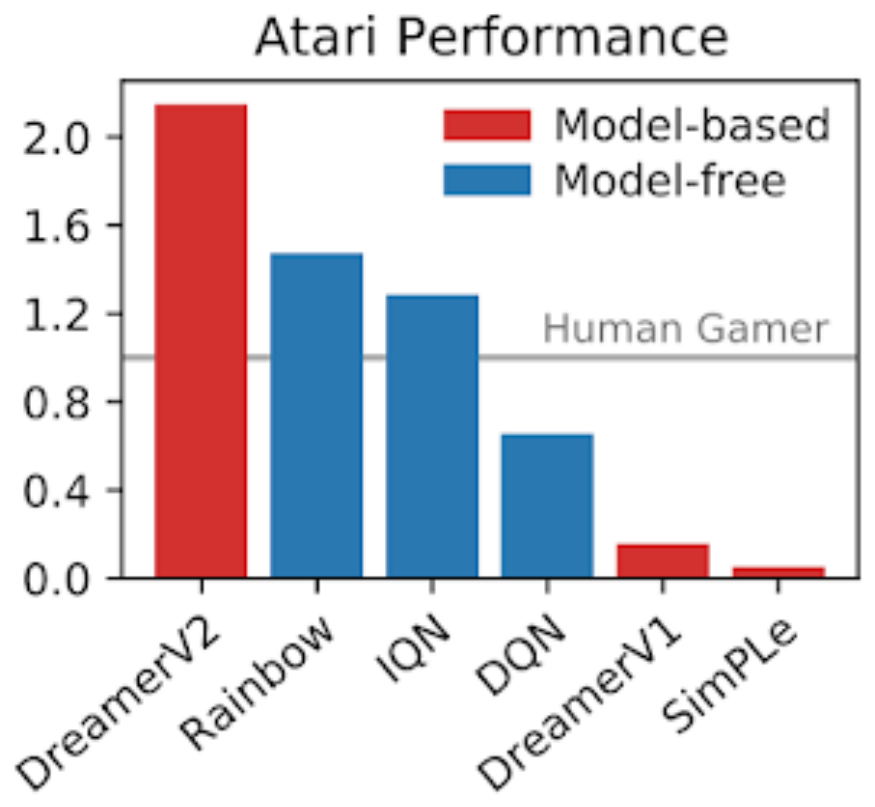
12. 결과: 모든 환경에서의 DreamerV3 (Results: DreamerV3 on All Envs)
세 번째 버전은 범용성을 겨냥합니다 (출처: Hafner et al., Mastering Diverse Domains through World Models, Nature 2025). 슬라이드 제목은 원문에 “on all evns”로 오타가 나 있는데, “envs”(environments)의 뜻입니다.
여덟 개의 패널이 서로 성격이 다른 여덟 도메인을 하나씩 맡습니다. 막대 색이 핵심입니다.
- 회색 — Tuned experts: 해당 도메인에 맞게 튜닝된 전문 알고리즘들
- 청록 PPO, 파랑 Dreamer — Unified configuration: 모든 도메인에 같은 설정 하나를 그대로 쓴 방법
| 도메인 | 규모 | 비교한 튜닝된 전문가 |
|---|---|---|
| Atari | 57개 과제, 200M 스텝 | Rainbow, MuZero |
| ProcGen | 16개 과제, 50M 스텝 | Rainbow, PPG |
| DMLab | 30개 과제, 100M 스텝 | R2D2+, IMPALA (둘 다 10배 데이터) |
| Minecraft | 1개 과제, 100M 스텝 | Rainbow, IMPALA |
| Atari100k | 26개 과제, 400K 스텝 | TWM, IRIS |
| Proprio Control | 18개 과제, 500K 스텝 | D4PG, DMPO |
| Visual Control | 20개 과제, 1M 스텝 | CURL, DrQ-v2 |
| BSuite | 23개 과제 | DQN, Boot DQN |
여덟 패널 모두에서 파란 Dreamer 막대가 가장 높습니다. 같은 “단일 설정” 조건인 PPO(청록)는 모든 패널에서 가장 낮습니다. 즉 Dreamer는 도메인마다 튜닝된 전문가들을, 도메인별 튜닝 없이 하나의 설정으로 넘어섰습니다. DMLab에서는 비교 대상(R2D2+, IMPALA)이 10배의 데이터를 썼다는 표시까지 붙어 있습니다.
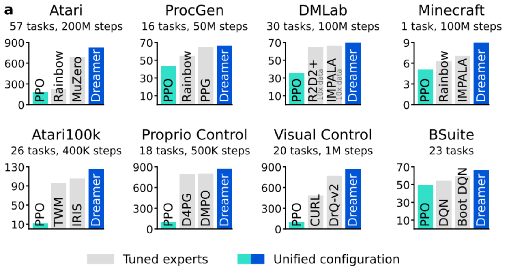
13. 사례 연구: DayDreamer (Case Study: DayDreamer)
시뮬레이터를 벗어나 실제 로봇에 Dreamer를 적용한 사례입니다 (출처: Wu et al., DayDreamer: World Models for Physical Robot Learning, CoRL 2022).
슬라이드에는 실내 매트 위에서 네 다리 로봇이 등을 바닥에 대고 뒤집혀 다리를 허공에 든 장면이 실려 있고, 왼쪽 아래에 “0 mins”라는 자막이 붙어 있습니다. 학습 시간을 표시하는 영상의 첫 장면, 곧 학습을 막 시작해 아직 아무것도 배우지 못한 상태입니다. PDF에는 이 정지 화면만 남아 있어 이후의 학습 과정은 볼 수 없지만, 사례의 의미는 분명합니다.
- 실제 로봇은 시뮬레이터처럼 수백만 스텝을 돌릴 수 없습니다. 상호작용 하나하나가 시간이 들고, 로봇이 넘어질 때마다 마모됩니다.
- Dreamer처럼 모형 안에서 상상으로 학습량을 불리는 방법은 실제 상호작용이 비쌀수록 가치가 커집니다. 2절의 “데이터 증폭기” 관점이 가장 잘 들어맞는 무대가 실제 로봇입니다.
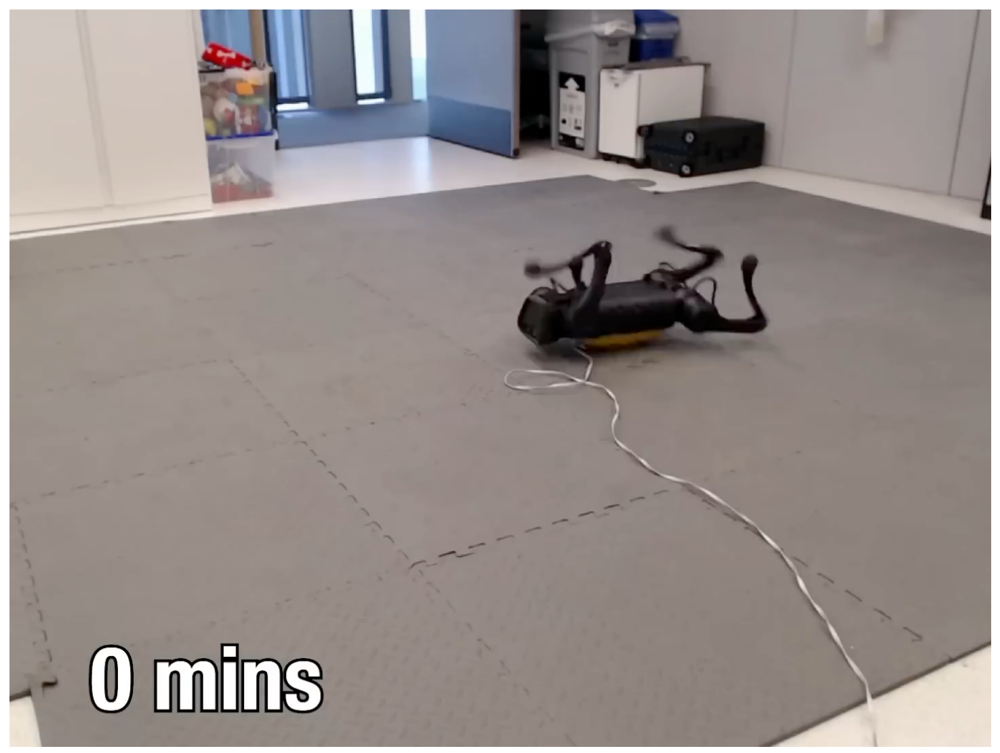
14. 요약 (Summary)
Dreamer 부분의 요약 슬라이드입니다.
- Dreamer는 (Dyna 방식) 모형 기반 정책 최적화를 구현한다. 2절의 틀 — 실제 데이터로 모형을 배우고, 모형으로 상상 데이터를 만들어 정책을 배운다 — 을 그대로 따릅니다.
- 표현 학습은 대부분 관측 재구성에 의존한다.
- (+) 고차원·다중 모달 관측에서 잘 작동한다. 이미지든 다른 감각이든, 다시 그려 낼 수만 있으면 잠재 상태에 담을 수 있습니다.
- (−) 세계 모형이 커서 GPU 메모리 사용량이 많고 갱신이 느리다. 슬라이드는 원인을 큰 세계 모형으로만 들지만, 이미지 전체를 다시 그리는 재구성 디코더가 그 큰 몫을 차지한다고 볼 수 있습니다.
- 그래도 상상 데이터는 잠재 공간에서 생성하므로 그렇게까지 느리지는 않다. 8.2절에서 본 대로 상상 중에는 이미지를 그리지 않습니다.
- DreamerV3는 최신(state-of-the-art) 모형 기반 강화학습 알고리즘이다.
- 이산 행동과 연속 행동 모두에서 작동한다 (12절).
- 모형 기반 강화학습을 쓸 때 가장 먼저 꺼내 드는(go-to) 알고리즘이다.
- 코드는 매우 잘 최적화되어 있지만 다소 복잡하다.
| 측면 | 장점 | 단점 |
|---|---|---|
| 표현 학습 | 재구성 덕분에 고차원·다중 모달 관측에 강함 | 큰 세계 모형 → GPU 메모리·갱신 시간 부담 |
| 상상 | 잠재 공간 롤아웃이라 그리 느리지 않음 | — |
| 범용성 | 이산·연속 행동 모두, 단일 설정으로 여러 도메인 | 구현이 복잡함 |
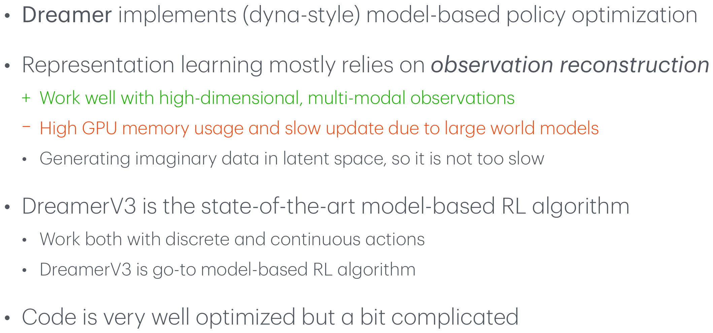
15. (복습) 모델 예측 제어 ((Recap) Model-Predictive Control)
장 구분 슬라이드(22쪽) TD-MPC로 후반부가 시작됩니다. Dreamer가 모형을 데이터 생성에 썼다면, TD-MPC는 모형을 계획에 씁니다. 출발점은 10회차에서 본 모델 예측 제어(MPC)입니다.
15.1 MPC 알고리즘
- 기본 정책 \(\pi_0(\mathbf{a}_t \mid \mathbf{s}_t)\)(예: 무작위 정책)를 실행해 데이터 \(D = \{(\mathbf{s}, \mathbf{a}, \mathbf{s}')_i\}\)를 모은다.
- 다음 손실을 최소화하도록 모형 \(f_\phi(\mathbf{s}, \mathbf{a})\)를 학습한다 (선택적으로 보상 모형 \(r_\phi(\mathbf{s}, \mathbf{a})\)도 학습한다). \[ \sum_i \big\lVert f_\phi(\mathbf{s}_i, \mathbf{a}_i) - \mathbf{s}'_i \big\rVert^2 \]
- 모형 \(f_\phi(\mathbf{s}, \mathbf{a})\)로 행동 시퀀스를 최적화한다.
- 계획한 행동 중 첫 번째만 실행하고, 그 결과 상태 \(\mathbf{s}'\)을 관측한다.
- \((\mathbf{s}, \mathbf{a}, \mathbf{s}')\)을 \(D\)에 추가한다.
왼쪽의 두 화살표가 두 개의 루프를 그립니다. 안쪽 루프(5 → 3)는 매 스텝 다시 계획하는 것이고, 바깥 루프(5 → 2)는 데이터가 쌓이면 모형을 다시 학습하는 것입니다.
- (+) 다시 계획하므로 모형 오차를 바로잡을 수 있다. 모형이 틀려서 예상과 다른 상태에 도착해도, 다음 스텝에서 실제로 도착한 상태로부터 새로 계획합니다.
- (−) 짧은 지평의 문제에서만 실용적이다.
15.2 왜 짧은 지평에서만 쓸 수 있는가
슬라이드는 두 가지 이유를 듭니다.
- (a) 긴 계획을 세우는 데 계산 비용이 크다. 지평이 \(H\)이고 행동이 \(|\mathbf{a}|\)차원이면, 최적화할 변수는 \(|\mathbf{a}| \cdot H\)개입니다. 10회차에서 본 대로 CEM 같은 샘플링 기반 최적화는 차원이 커질수록 같은 품질의 해를 찾는 데 필요한 표본 수가 급격히 늘어나는데, 그 계산을 매 스텝 반복해야 합니다.
- (b) 모형이 긴 지평에서 정확하지 않다. 2.1절의 오차 누적과 같은 이야기입니다. 계획의 뒤쪽은 모형이 상상한 엉뚱한 상태 위에서 평가되므로, 아무리 열심히 최적화해도 잘못된 목표를 최적화하게 됩니다.
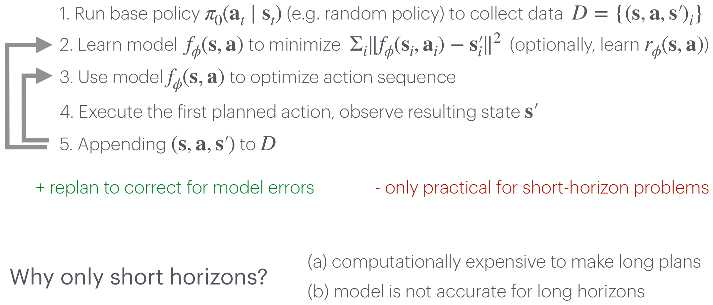
15.3 더 긴 지평의 문제를 모형으로 푸는 두 가지 방법
제목 없는 24쪽이 질문을 던집니다 — “모형을 써서 더 긴 지평의 문제를 어떻게 풀 수 있을까?” 답은 두 가지입니다.
- 종단 가치 함수(terminal value function)와 함께 짧은 지평으로 계획한다.
- 모형으로 만든 데이터로 모형 없는 강화학습 방법을 보강한다.
슬라이드는 “지난 강의에서는 주로 2번(모형 기반 정책 최적화)을 다루었다”며 “오늘은 1번을 이야기하자”고 말합니다. 2번은 2절에서 복습했고 Dreamer(5–14절)가 그 구현이었습니다. 이제 1번의 대표 알고리즘인 TD-MPC로 넘어갑니다.
| 방법 | 모형의 역할 | 긴 지평을 다루는 방식 | 이번 강의의 대표 |
|---|---|---|---|
| 1. 종단 가치 함수 + 짧은 계획 | 계획 (행동 시퀀스 최적화) | 지평 너머를 가치 함수가 요약 | TD-MPC |
| 2. 모형 데이터로 모형 없는 강화학습 보강 | 데이터 생성 | 모형 없는 강화학습의 가치 함수가 담당 | Dreamer |
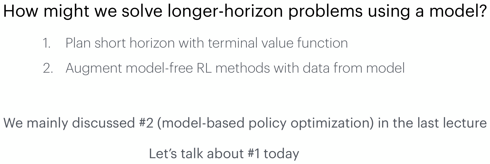
16. 종단 가치 함수와 함께 계획하기 (Plan with Terminal Value Function)
16.1 국소 최적과 전역 최적
슬라이드는 세 문장으로 아이디어를 압축합니다.
- MPC는 시간적으로 국소 최적(locally optimal)인 해를 낸다.
- 가치 함수는 전역 최적(globally optimal) 해를 근사한다.
- 둘을 합치면 — 전역 가치를 최대화하는 국소 계획(local planning that maximizes global value).
두 목적함수를 나란히 놓으면 차이가 보입니다.
MPC 목적함수 — 시점 \(t\)부터 \(H\)스텝 동안의 보상만 봅니다 (“국소 궤적만 최적화한다”).
\[ \max_{\mathbf{a}_{t:t+H-1}} \sum_{t'=t}^{t+H-1} r(\mathbf{s}_{t'}, \mathbf{a}_{t'}) \]
원래 풀고 싶은 목적함수 — 에피소드 끝 \(T\)까지의 보상을 봅니다 (“전역 최적 해가 필요하다!”).
\[ \max_{\mathbf{a}_{t:T}} \sum_{t'=t}^{T} r(\mathbf{s}_{t'}, \mathbf{a}_{t'}) \]
MPC는 \(t+H\) 이후에 무슨 일이 일어나는지 전혀 보지 않으므로, 예를 들어 \(H\)스텝 안에서 보상을 가장 많이 받지만 그 직후 절벽에서 떨어지는 계획을 고를 수 있습니다. 슬라이드는 원래 목적함수를 다음처럼 근사합니다.
\[ \max_{\mathbf{a}_{t:T}} \sum_{t'=t}^{T} r(\mathbf{s}_{t'}, \mathbf{a}_{t'}) \;\approx\; \max_{\mathbf{a}_{t:t+H-1}} \sum_{t'=t}^{t+H-1} r(\mathbf{s}_{t'}, \mathbf{a}_{t'}) + Q(\mathbf{s}_{t+H}, \mathbf{a}_{t+H}) \]
근사식의 유도
슬라이드는 결과만 제시하므로 단계별로 풀어 보겠습니다. MPC 복습(15절)처럼 상태 전이가 결정적 \(\mathbf{s}_{t'+1} = f(\mathbf{s}_{t'}, \mathbf{a}_{t'})\)이라고 두고, 슬라이드처럼 할인율은 생략합니다.
1단계 (합을 \(t+H\)에서 자른다). 보상의 합을 앞의 \(H\)스텝과 나머지로 나눕니다.
\[ \sum_{t'=t}^{T} r(\mathbf{s}_{t'}, \mathbf{a}_{t'}) = \sum_{t'=t}^{t+H-1} r(\mathbf{s}_{t'}, \mathbf{a}_{t'}) + \sum_{t'=t+H}^{T} r(\mathbf{s}_{t'}, \mathbf{a}_{t'}) \]
2단계 (\(\max\)를 둘로 나눈다). 앞부분은 \(\mathbf{a}_{t:t+H-1}\)에만 의존하고, 뒷부분은 \(\mathbf{s}_{t+H}\)(앞의 행동들이 결정함)와 \(\mathbf{a}_{t+H:T}\)에 의존합니다. 따라서 바깥에서 앞 행동들을, 안에서 뒤 행동들을 최대화하는 두 겹의 \(\max\)로 쓸 수 있습니다.
\[ \max_{\mathbf{a}_{t:T}} \sum_{t'=t}^{T} r = \max_{\mathbf{a}_{t:t+H-1}} \Big[ \sum_{t'=t}^{t+H-1} r(\mathbf{s}_{t'}, \mathbf{a}_{t'}) + \max_{\mathbf{a}_{t+H:T}} \sum_{t'=t+H}^{T} r(\mathbf{s}_{t'}, \mathbf{a}_{t'}) \Big] \]
3단계 (안쪽 \(\max\)는 최적 가치다). 안쪽 항은 “상태 \(\mathbf{s}_{t+H}\)에서 출발해 끝까지 최선을 다했을 때의 보상 합”, 곧 최적 상태 가치 \(V^*_{t+H}(\mathbf{s}_{t+H})\)입니다. 끝 \(T\)가 정해진 유한 지평에서는 남은 스텝 수에 따라 최적 가치가 달라지므로 시점 첨자를 붙였습니다. 그리고 \(V^*_{t+H}(\mathbf{s}) = \max_{\mathbf{a}} Q^*_{t+H}(\mathbf{s}, \mathbf{a})\)이므로,
\[ \max_{\mathbf{a}_{t+H:T}} \sum_{t'=t+H}^{T} r(\mathbf{s}_{t'}, \mathbf{a}_{t'}) = \max_{\mathbf{a}_{t+H}} Q^*_{t+H}(\mathbf{s}_{t+H}, \mathbf{a}_{t+H}) \]
4단계 (학습된 Q로 대신한다). \(Q^*_{t+H}\)는 모르므로 학습된 \(Q\)로 대신하고, \(\mathbf{a}_{t+H}\)는 계획 대상 행동 시퀀스의 마지막 원소(또는 정책이 고른 행동)로 둡니다. 이것이 슬라이드의 \(\approx\)입니다. 근사가 들어가는 곳은 두 군데입니다.
- (i) 가치의 근사: 시점에 따라 달라지는 최적 가치 \(Q^*_{t+H}\)를 학습된 \(Q\) 하나로 대신합니다.
- (ii) 마지막 행동의 근사: \(\mathbf{a}_{t+H}\)를 정책이 고르면 그 행동이 \(Q\)를 최대화하는 행동이 아닐 수 있습니다(\(Q(\mathbf{s}, \pi(\mathbf{s})) \le \max_{\mathbf{a}} Q(\mathbf{s}, \mathbf{a})\)). \(\mathbf{a}_{t+H}\)까지 계획 대상에 넣어 함께 최대화하면 이 차이는 사라지고, 바깥 \(\max\)는 사실상 \(\mathbf{a}_{t:t+H}\)에 대해 취해집니다. 19.2절의 알고리즘 1이 실제로 \(H+1\)개의 행동을 다룹니다.
\(Q\)가 정확할수록 짧은 계획이 전역 최적에 가까워집니다.
종단 가치 함수 \(Q(\mathbf{s}_{t+H}, \mathbf{a}_{t+H})\)는 “\(t+H\) 이후 에피소드 끝까지”를 하나의 숫자로 요약합니다. 그래서 계획 자체는 \(H\)스텝만 하면서도, 그 \(H\)스텝을 고르는 기준에는 에피소드 전체가 반영됩니다. 15.2절의 두 문제 — 긴 계획의 계산 비용과 모형의 장기 오차 — 를 동시에 피하는 방법입니다. 지평 너머는 모형으로 굴리지 않고 가치 함수가 맡기 때문입니다.
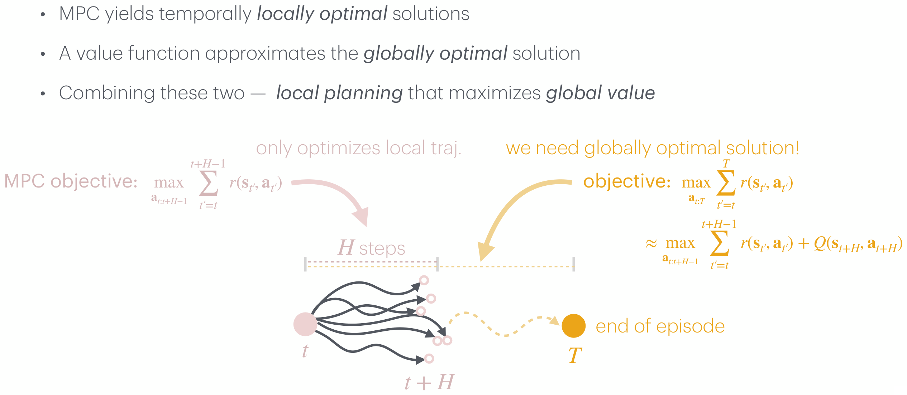
16.2 \(H\)스텝 계획, 그러나 가치까지 최대화
둘째 슬라이드는 이 아이디어를 실제 계획 절차로 옮깁니다 (출처: Hansen et al., Temporal Difference Learning for Model Predictive Control, ICML 2022).
- \(H\)스텝 동안 계획한다 (예: CEM).
- 그러나 최대화하는 것은 다음 값이다.
\[ \underbrace{\sum_{t'=t}^{t+H-1} R_\theta(\mathbf{s}_{t'}, \mathbf{a}_{t'})}_{\text{Rewards}} + \underbrace{Q_\theta(\mathbf{s}_{t+H}, \mathbf{a}_{t+H})}_{\text{Value}} \]
16.1절의 식과 같은 모양이지만, 보상 \(r\)이 학습된 보상 모형 \(R_\theta\)로, \(Q\)가 학습된 \(Q_\theta\)로 바뀌었습니다. 오른쪽 도식은 이 계획이 실제 환경과 어떻게 맞물리는지 보여 줍니다.
- 관측(Observation)에서 현재 상태 \(s_t\)를 얻습니다.
- 계획(Planning) 상자 안에서 \(s_t\)로부터 여러 후보 궤적을 \(s_{t+H}\)까지 펼치고, 각 궤적을 “보상 + 가치”로 평가합니다.
- 가장 좋은 궤적의 첫 행동(Action)을 환경(Environment)에 실행합니다.
- 환경이 보상(Reward)과 새 관측을 돌려주고, 다시 1번부터 반복합니다.
CEM은 10회차에서 본 샘플링 기반 최적화입니다. 행동 시퀀스의 분포 \(\mathcal{N}(\mu, \sigma)\)에서 후보를 여러 개 뽑아 평가하고, 점수가 높은 상위 후보(엘리트)들로 \(\mu\)와 \(\sigma\)를 다시 맞추는 과정을 반복합니다. 달라진 것은 후보를 평가하는 점수에 종단 가치가 더해졌다는 것뿐입니다.
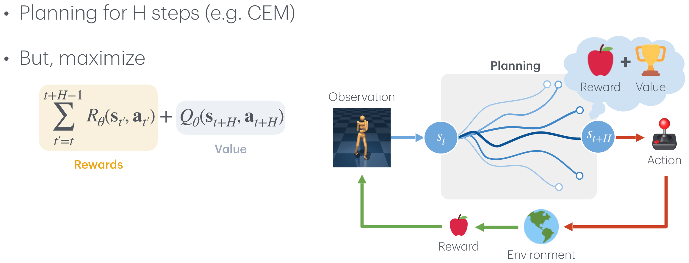
17. 잠재 동역학 모형 (Latent Dynamics Model)
16절의 계획은 모형 \(\mathbf{s}' = f_\phi(\mathbf{s}, \mathbf{a})\)를 수없이 호출합니다. 그렇다면 어떤 모형이 계획에 적합할까요? 같은 제목의 슬라이드 세 장이 답을 쌓아 갑니다 (출처: Hansen et al., ICML 2022).
17.1 모든 것을 모형화하는 모형의 문제
- \(\mathbf{s}' = f_\phi(\mathbf{s}, \mathbf{a})\)는 환경의 모든 것을 모형화한다. 다음 상태의 모든 성분, 이미지라면 모든 픽셀을 예측해야 합니다.
- 정보가 너무 많다 → 느리고 부정확하다. 과제와 무관한 세부(배경의 질감, 조명)까지 예측하느라 모형 용량과 계산을 낭비하고, 그 세부의 오차가 계획을 흐립니다.
- 모형 없는 강화학습은 보상을 예측하는 데 필요한 정보만 유지한다. Q-함수를 학습하는 신경망의 중간 표현은 “이 상태가 얼마나 좋은가”를 맞추는 데 필요한 정보만 남기도록 학습됩니다.
- 과제 지향(task-oriented) 정보만 담은 “잠재 상태 \(\mathbf{z}\)” 위에서 계획한다.
- 상태 \(\mathbf{s}\)보다 간결한 표현이다.
- 모형화하기 쉽다.
- 계획이 빠르다.
오른쪽 도식은 이 잠재 동역학 모형의 구조입니다.
- \(t = 0\)의 관측 이미지가 인코더(Encoder)를 거쳐 잠재 상태 \(\mathbf{z}_0\)이 됩니다.
- 각 잠재 상태는 행동(조이스틱, 빨간 화살표)을 받아 다음 잠재 상태 \(\mathbf{z}_1, \mathbf{z}_2, \ldots\)로 넘어갑니다 (파란 화살표).
- 각 잠재 상태에서 세 갈래가 나옵니다 — 가치(트로피, 주황), 보상(사과, 초록), 행동(조이스틱, 빨강).
Dreamer의 세계 모형(6절)과 비교하면 재구성 디코더가 없습니다. 잠재 상태는 이미지를 다시 그리는 데 쓰이지 않고, 보상·가치·행동을 예측하는 데만 쓰입니다. 그래서 잠재 상태에는 과제에 필요한 정보만 남습니다.
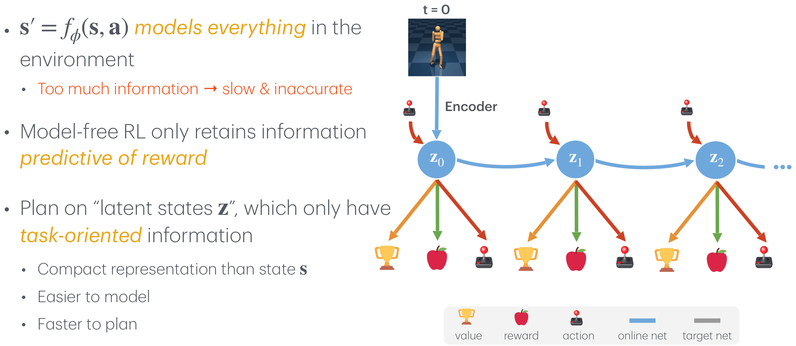
17.2 다음 잠재 상태의 표적은 표적 신경망이 만든다
둘째 슬라이드는 같은 도식에 \(t = 1\), \(t = 2\)의 관측 이미지를 추가합니다. 이 이미지들은 흑백으로 흐리게 표시되어 있고, 각각 회색 화살표 “Target net”을 거쳐 \(\mathbf{z}_1\), \(\mathbf{z}_2\)에 닿습니다. 그리고 \(\mathbf{z}_1\), \(\mathbf{z}_2\)에 주황 테두리가 생겼습니다.
이 그림이 말하는 것은 다음과 같습니다.
- 모형이 예측한 다음 잠재 상태 \(\mathbf{z}_1\)(파란 화살표, 온라인 신경망의 예측)이 맞았는지 확인하려면 정답 잠재 상태가 필요합니다.
- 정답은 실제 다음 관측을 표적 신경망(target network)으로 부호화해 얻습니다. 회색이 범례의 “target net”입니다.
- 주황 테두리는 “예측된 잠재 상태와 표적 잠재 상태가 일치해야 한다”는 학습 신호가 걸리는 지점입니다.
왜 표적 신경망인가. 정답 잠재 상태도 인코더가 만듭니다. 예측과 정답이 같은 신경망에서 나오면 학습 표적이 매 갱신마다 함께 움직이고, 이 항만 놓고 보면 인코더와 동역학이 모든 입력을 같은 상수로 보내는 자명한 해에서도 오차가 0이 됩니다. 6회차의 DQN이 움직이는 표적값 문제를 천천히 따라오는 표적 신경망으로 다스렸던 것처럼, 정답 쪽 인코더를 별도의 느린 신경망으로 두어 학습을 안정시키는 것입니다.
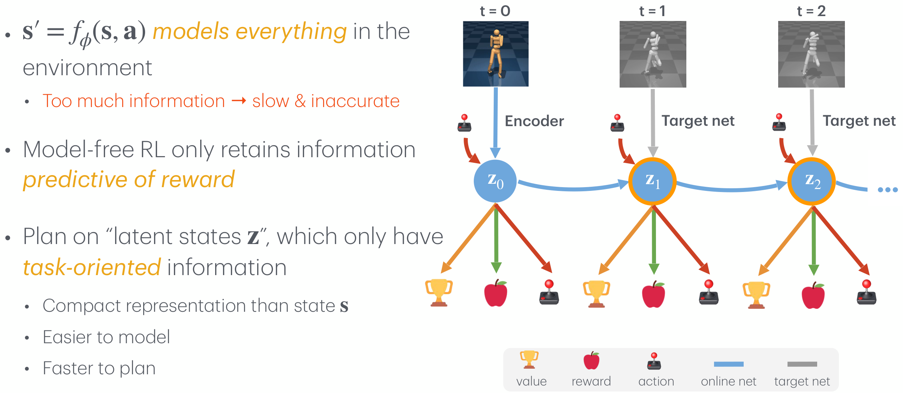
17.3 목적함수
셋째 슬라이드는 그림의 각 화살표에 이름을 붙이고 학습 목적함수를 적습니다.
| 기호 | 역할 | 그림의 화살표 |
|---|---|---|
| \(h_\theta\) | 인코더 (온라인) | \(t=0\)의 파란 세로 화살표 |
| \(h_{\theta^-}\) | 인코더 (표적) | \(t=1, 2\)의 회색 세로 화살표 |
| \(d_\theta\) | 잠재 동역학 \(\mathbf{z}_{i+1} = d_\theta(\mathbf{z}_i, \mathbf{a}_i)\) | 파란 가로 화살표 |
| \(R_\theta\) | 보상 예측 | 초록 화살표 (사과) |
| \(Q_\theta\) | 가치 예측 | 주황 화살표 (트로피) |
| \(\pi_\theta\) | 정책 | 빨간 화살표 (조이스틱) |
모든 구성 요소가 하나의 파라미터 묶음 \(\theta\)를 공유합니다. 이 슬라이드(29쪽)의 식에서는 표적 인코더 \(h_{\theta^-}\)만 \(\theta^-\)를 쓰며, 30쪽의 원 논문 식에서는 가치 표적의 \(Q\)도 \(Q_{\theta^-}\)입니다(18절).
목적함수. 버퍼에서 뽑은 시점 \(t\)부터 \(t+H\)까지의 구간 \(\tau\)에 대해, 각 시점의 손실을 시간에 따라 줄어드는 가중치로 더합니다 (슬라이드의 합의 위끝 \(t_H\)는 구간의 마지막 시점 \(t+H\)입니다).
\[ J(\theta; \tau) = \sum_{i=t}^{t_H} \lambda^{i-t}\, \mathcal{L}(\theta; \tau_i) \]
각 시점의 손실은 세 항의 합입니다.
\[ \begin{aligned} \mathcal{L}(\theta; \tau_i) = \;& \big\lVert R_\theta(\mathbf{z}_i, \mathbf{a}_i) - r_i \big\rVert^2 && \text{(Reward)} \\ &+ \big\lVert Q_\theta(\mathbf{z}_i, \mathbf{a}_i) - \big( r_i + Q_\theta(\mathbf{z}_{i+1}, \pi_\theta(\mathbf{z}_{i+1})) \big) \big\rVert^2 && \text{(Value)} \\ &+ \big\lVert d_\theta(\mathbf{z}_i, \mathbf{a}_i) - h_{\theta^-}(\mathbf{s}_{i+1}) \big\rVert^2 && \text{(Latent dynamics)} \end{aligned} \]
정책은 따로 다음을 최소화합니다.
\[ J_\pi(\theta; \tau) = -\sum_{i=t}^{t_H} \lambda^{i-t}\, Q_\theta\big(\mathbf{z}_i, \pi_\theta(\mathbf{z}_i)\big) \]
각 항 읽기
- 보상 항: 잠재 상태와 행동에서 실제 보상 \(r_i\)를 맞추도록 \(R_\theta\)를 학습합니다. 지도학습 회귀입니다.
- 가치 항: 6회차의 시간차 학습입니다. \(Q_\theta(\mathbf{z}_i, \mathbf{a}_i)\)가 “받은 보상 + 다음 상태의 가치”와 같아지도록 맞춥니다. 다음 상태에서의 행동은 계획이 아니라 정책 \(\pi_\theta(\mathbf{z}_{i+1})\)이 고릅니다 (그 이유는 18절).
- 잠재 동역학 항: 예측한 다음 잠재 상태 \(d_\theta(\mathbf{z}_i, \mathbf{a}_i)\)가 실제 다음 관측 \(\mathbf{s}_{i+1}\)을 표적 인코더로 부호화한 \(h_{\theta^-}(\mathbf{s}_{i+1})\)과 같아지도록 합니다. 17.2절의 주황 테두리가 이 항입니다. 관측을 재구성하는 항은 어디에도 없습니다.
- 정책 목적함수: \(-Q\)를 최소화하는 것은 \(Q_\theta(\mathbf{z}_i, \pi_\theta(\mathbf{z}_i))\)를 최대화하는 것과 같습니다. 7회차 DDPG·TD3의 정책 갱신처럼, 정책이 고른 행동의 Q 값을 키우는 방향으로 정책을 움직입니다.
잠재 상태 \(\mathbf{z}_i\)는 어디서 오는가
여기서 \(\mathbf{z}_i\)는 매 시점 관측을 부호화한 값이 아니라, 첫 관측만 부호화한 뒤 모형으로 굴린 값입니다 (19.3절의 알고리즘 2가 이를 명시합니다).
\[ \mathbf{z}_t = h_\theta(\mathbf{s}_t), \qquad \mathbf{z}_{i+1} = d_\theta(\mathbf{z}_i, \mathbf{a}_i) \quad (i = t, \dots, t+H) \]
이렇게 하면 세 손실이 모두 모형이 여러 스텝 상상한 잠재 상태 위에서 계산되므로, 모형은 한 스텝 예측뿐 아니라 계획 때처럼 자기 예측을 이어 붙인 상태에서도 보상·가치·다음 상태를 맞추도록 학습됩니다. 가중치 \(\lambda^{i-t}\)는 이렇게 멀리 굴린 시점일수록 손실의 비중을 줄입니다(\(0 < \lambda < 1\)일 때. \(\lambda = 1\)이면 모든 시점의 비중이 같습니다).
잠재 상태를 정의하는 것은 세 학습 신호입니다 — 보상을 맞출 수 있어야 하고(보상 항), 미래 가치를 맞출 수 있어야 하며(가치 항), 다음 시점에도 같은 방식으로 이어져야 합니다(잠재 동역학 항). 이 세 조건을 만족하는 데 필요한 정보는 곧 과제를 푸는 데 필요한 정보입니다. 배경의 질감처럼 보상과 가치에 영향을 주지 않는 세부는 잠재 상태에 담을 이유가 없으므로 자연스럽게 버려집니다. Dreamer(6절)가 “이미지를 다시 그릴 수 있는가”로 잠재 상태를 정의한 것과 대조적입니다.
슬라이드 아래쪽에는 다음 질문이 크게 적혀 있습니다 — “MPC에 왜 정책이 있는가?” MPC는 계획으로 행동을 고르는데, 왜 별도의 정책 \(\pi_\theta\)를 학습할까요? 다음 슬라이드가 답합니다.
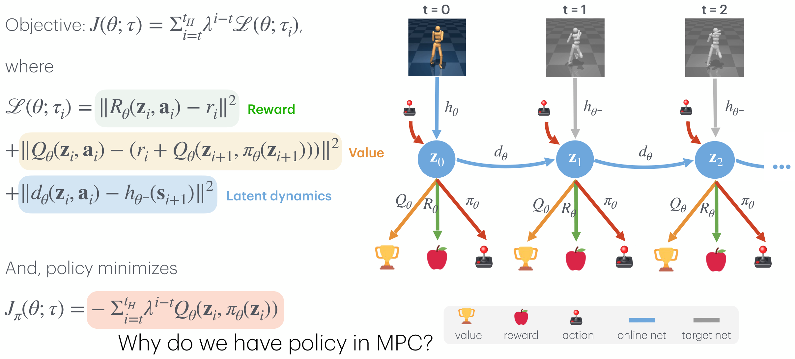
18. 왜 MPC에서 정책을 학습하는가 (Why Learn a Policy in MPC?)
TD-MPC는 행동을 계획(CEM)으로 고르면서도 정책 \(\pi_\theta\)를 따로 학습합니다. 슬라이드는 두 가지 이유를 듭니다 (출처: Hansen et al., ICML 2022).
- 계획(Planning): 정책의 행동 제안(action proposals)이 CEM의 수렴을 빠르게 한다.
- 정책이 낸 행동은 균등 무작위 분포에서 시작하는 것보다 나을 수 있습니다. CEM은 처음에 넓은 분포에서 후보를 뽑아 점점 좁혀 가는데, 학습된 정책이 이미 괜찮은 행동 시퀀스를 후보로 넣어 주면 적은 반복으로 좋은 해에 도달합니다.
- Q-학습(Q-Learning): 계획으로 Q 표적값을 추정하면 매우 느리다. 대신 정책을 쓴다.
- 가치 항의 표적값에는 다음 상태에서의 행동이 필요합니다. 이론적으로는 그 행동을 “다음 상태에서 계획한 최선의 행동”으로 해야 하지만, 학습 배치의 모든 표본마다 CEM을 돌리는 것은 너무 비쌉니다. 정책 \(\pi_\theta(\mathbf{z}_{i+1})\)은 신경망 한 번의 전방 계산으로 그 행동을 근사합니다.
슬라이드는 원 논문의 손실식(식 8–10)을 그대로 옮기고, 빨간 화살표로 표적값 안의 \(\pi_\theta(\mathbf{z}_{i+1})\)을 가리킵니다.
\[ \begin{aligned} \mathcal{L}(\theta; \Gamma_i) = \;& c_1 \underbrace{\big\lVert R_\theta(\mathbf{z}_i, \mathbf{a}_i) - r_i \big\rVert_2^2}_{\text{reward}} && (8) \\ &+ c_2 \underbrace{\big\lVert Q_\theta(\mathbf{z}_i, \mathbf{a}_i) - \big( r_i + \gamma\, Q_{\theta^-}(\mathbf{z}_{i+1}, \pi_\theta(\mathbf{z}_{i+1})) \big) \big\rVert_2^2}_{\text{value}} && (9) \\ &+ c_3 \underbrace{\big\lVert d_\theta(\mathbf{z}_i, \mathbf{a}_i) - h_{\theta^-}(\mathbf{s}_{i+1}) \big\rVert_2^2}_{\text{latent state consistency}} && (10) \end{aligned} \]
17.3절의 식과 비교하면 원 논문 식에서 네 가지가 달라집니다.
| 차이 | 17.3절 (슬라이드 29쪽) | 원 논문 식 (슬라이드 30쪽) |
|---|---|---|
| 항별 가중치 | 없음 | \(c_1, c_2, c_3\) |
| 할인율 | 생략 | 표적값에 \(\gamma\) |
| 표적값의 Q | \(Q_\theta\) | 표적 신경망 \(Q_{\theta^-}\) |
| 셋째 항의 이름 | Latent dynamics | latent state consistency (잠재 상태 일관성) |
표적값의 Q를 표적 신경망 \(Q_{\theta^-}\)로 계산하는 것은 6회차 DQN 이래의 관례 그대로이며, 셋째 항의 이름 “잠재 상태 일관성”은 예측한 잠재 상태와 실제로 관측한 다음 상태의 잠재 표현이 일관되어야 한다는 뜻을 직접 드러냅니다.
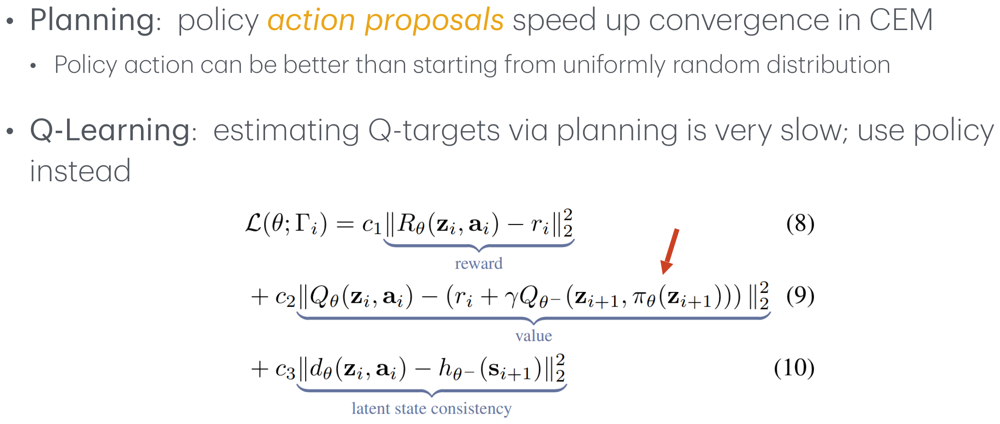
19. TD-MPC
19.1 세 요소의 결합
슬라이드는 TD-MPC를 한 줄로 정의합니다 (출처: Hansen et al., ICML 2022).
Latent dynamics + CEM-MPC w/ TD-learning (잠재 동역학 + 시간차 학습을 곁들인 CEM-MPC)
- (과제 지향) 잠재 공간에서 계획한다 — 17절의 잠재 동역학 모형.
- 추론에는 CEM-MPC를 쓴다 — 행동은 매 스텝 CEM으로 계획한 첫 행동입니다 (15절).
- Q 값으로 반환값 추정치를 최대화한다 — 16절의 종단 가치. \(Q\)는 시간차 학습(TD-learning)으로 학습합니다. 알고리즘 이름의 “TD”가 여기서 왔습니다.
최대화하는 값은 16.2절의 식에서 상태 \(\mathbf{s}\)를 잠재 상태 \(\mathbf{z}\)로 바꾼 것입니다.
\[ \underbrace{\sum_{t'=t}^{t+H-1} R_\theta(\mathbf{z}_{t'}, \mathbf{a}_{t'})}_{\text{Rewards}} + \underbrace{Q_\theta(\mathbf{z}_{t+H}, \mathbf{a}_{t+H})}_{\text{Value}} \]
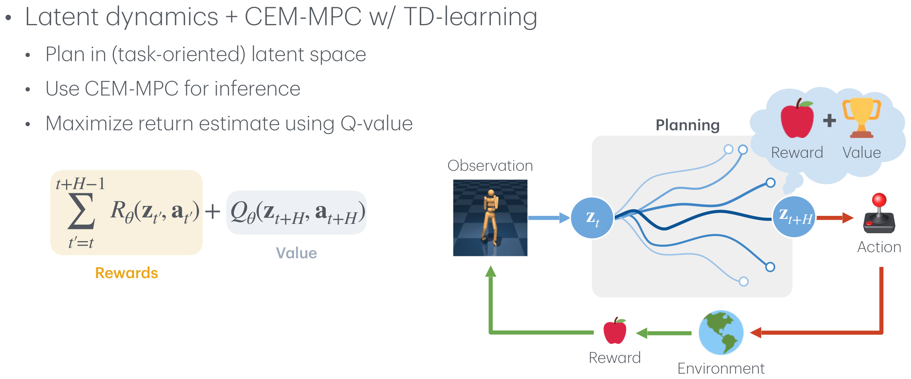
19.2 알고리즘 1: TD-MPC (추론)
제목 없는 32쪽은 원 논문의 두 알고리즘을 나란히 옮기고, 왼쪽과 오른쪽에 색깔 이름표를 붙였습니다. 왼쪽의 알고리즘 1은 행동을 고르는 법입니다. 이름표는 위에서부터 Latent dynamics, CEM planning, Use reward + value, MPC입니다.
입력(Require): 학습된 파라미터 \(\theta\), 정규분포 \(\mathcal{N}\)의 초기 파라미터 \(\mu^0, \sigma^0\), 표본 궤적 수 \(N\)과 정책 궤적 수 \(N_\pi\), 현재 상태 \(\mathbf{s}_t\)와 롤아웃 지평 \(H\).
- 상태를 부호화한다: \(\mathbf{z}_t \leftarrow h_\theta(\mathbf{s}_t)\). (TOLD 모형을 가정 — Latent dynamics)
- 반복 \(j = 1, \dots, J\)마다 (CEM planning):
- \(\quad\) \(\mathcal{N}\big(\mu^{j-1}, (\sigma^{j-1})^2 \mathrm{I}\big)\)에서 길이 \(H\)의 궤적 \(N\)개를 뽑는다.
- \(\quad\) \(\pi_\theta\)와 \(d_\theta\)로 길이 \(H\)의 궤적 \(N_\pi\)개를 뽑는다. (파란 글씨 — 18절의 “행동 제안”)
- \(\quad\) \(N + N_\pi\)개의 모든 행동 시퀀스 \((\mathbf{a}_t, \mathbf{a}_{t+1}, \dots, \mathbf{a}_{t+H})\)에 대해, \(\mathbf{z}_t\)에서 출발하고 \(\phi_\Gamma = 0\)으로 시작해 반환값 \(\phi_\Gamma\)를 추정한다 (Use reward + value):
- \(\quad\quad\) 스텝 \(t = 0, \dots, H-1\)마다:
- \(\quad\quad\quad\) \(\phi_\Gamma = \phi_\Gamma + \gamma^t R_\theta(\mathbf{z}_t, \mathbf{a}_t)\) (보상)
- \(\quad\quad\quad\) \(\mathbf{z}_{t+1} \leftarrow d_\theta(\mathbf{z}_t, \mathbf{a}_t)\) (잠재 전이)
- \(\quad\quad\) \(\phi_\Gamma = \phi_\Gamma + \gamma^H Q_\theta(\mathbf{z}_H, \mathbf{a}_H)\) (종단 가치)
- \(\quad\) 다음 반복을 위해 원 논문의 식 4(와 식 5)로 \(\mu^j, \sigma^j\)를 갱신한다.
- \(\mathbf{a} \sim \mathcal{N}\big(\mu^J, (\sigma^J)^2 \mathrm{I}\big)\)를 반환한다 (MPC).
각 후보가 받는 점수
6–9행을 하나의 식으로 모으면, 각 후보 행동 시퀀스 \(\Gamma\)가 받는 점수는
\[ \phi_\Gamma = \sum_{k=0}^{H-1} \gamma^{k} R_\theta(\mathbf{z}_k, \mathbf{a}_k) + \gamma^{H} Q_\theta(\mathbf{z}_H, \mathbf{a}_H), \qquad \mathbf{z}_{k+1} = d_\theta(\mathbf{z}_k, \mathbf{a}_k) \]
입니다 (알고리즘은 루프 안에서 시점 인덱스를 \(0\)부터 다시 셉니다). 19.1절의 목적함수에 할인율 \(\gamma^{k}\), \(\gamma^{H}\)를 붙인 형태이며, \(\gamma = 1\)이면 정확히 같습니다. 행동 시퀀스가 \(\mathbf{a}_t\)부터 \(\mathbf{a}_{t+H}\)까지 \(H+1\)개인 이유도 여기서 보입니다. 앞의 \(H\)개는 보상 계산에, 마지막 하나는 종단 가치 \(Q_\theta(\mathbf{z}_H, \mathbf{a}_H)\)에 쓰입니다.
분포 갱신과 반환
10행의 식 4·5는 슬라이드에 실려 있지 않습니다. 10회차에서 본 CEM의 기본 형태는 상위 \(M\)개의 엘리트 행동 시퀀스 \(\mathbf{A}_{i_1}, \dots, \mathbf{A}_{i_M}\)로 분포를 다시 맞추는 것이었습니다.
\[ \mu_{\text{new}} = \frac{1}{M} \sum_{m=1}^{M} \mathbf{A}_{i_m}, \qquad \sigma^2_{\text{new}} = \frac{1}{M} \sum_{m=1}^{M} \big( \mathbf{A}_{i_m} - \mu_{\text{new}} \big)^2 \]
\(J\)번 반복으로 분포가 좋은 행동 시퀀스 쪽으로 좁혀지면, 마지막 분포에서 행동을 뽑아 반환합니다. MPC이므로 이 행동 중 현재 시점의 행동만 실행하고, 다음 스텝에서 다시 1행부터 계획합니다.
19.3 알고리즘 2: TOLD (학습)
오른쪽의 알고리즘 2는 모형을 학습하는 법입니다. 1행의 “Assuming TOLD model”이 가리키는 TOLD는 17절의 잠재 동역학 모형에 원 논문이 붙인 이름입니다. 이름표는 Collect data와 Update model / policy입니다.
입력(Require): 무작위로 초기화한 신경망 파라미터 \(\theta, \theta^-\), 학습률·계수·버퍼 \(\eta, \tau, \lambda, \mathcal{B}\).
- 지치지 않는 동안(while not tired) 계속 반복한다:
- \(\quad\) // \(\mathbf{s}_0 \sim p_0\)에서 시작해 TD-MPC로 에피소드를 모은다 (Collect data):
- \(\quad\) 스텝 \(t = 0, \dots, T\)마다:
- \(\quad\quad\) \(\mathbf{a}_t \sim \Pi_\theta(\cdot \mid h_\theta(\mathbf{s}_t))\) — TD-MPC(알고리즘 1)로 행동을 뽑는다.
- \(\quad\quad\) \((\mathbf{s}_{t+1}, r_t) \sim \mathcal{T}(\cdot \mid \mathbf{s}_t, \mathbf{a}_t),\ \mathcal{R}(\cdot \mid \mathbf{s}_t, \mathbf{a}_t)\) — 환경을 한 스텝 진행한다.
- \(\quad\quad\) \(\mathcal{B} \leftarrow \mathcal{B} \cup (\mathbf{s}_t, \mathbf{a}_t, r_t, \mathbf{s}_{t+1})\) — 버퍼에 추가한다.
- \(\quad\) // 버퍼 \(\mathcal{B}\)의 데이터로 TOLD를 갱신한다 (Update model / policy):
- \(\quad\) 에피소드당 갱신 횟수만큼:
- \(\quad\quad\) \(\{\mathbf{s}_t, \mathbf{a}_t, r_t, \mathbf{s}_{t+1}\}_{t:t+H} \sim \mathcal{B}\) — 궤적 구간을 뽑는다 (12행의 루프가 \(i = t+H\)까지 돌므로 \(H+1\)개의 전이가 필요합니다).
- \(\quad\quad\) \(\mathbf{z}_t = h_\theta(\mathbf{s}_t)\) — 첫 관측만 부호화한다.
- \(\quad\quad\) \(J = 0\) — 손실 누적 변수를 초기화한다.
- \(\quad\quad\) \(i = t, \dots, t+H\)마다:
- \(\quad\quad\quad\) \(\hat{r}_i = R_\theta(\mathbf{z}_i, \mathbf{a}_i)\) (식 8)
- \(\quad\quad\quad\) \(\hat{q}_i = Q_\theta(\mathbf{z}_i, \mathbf{a}_i)\) (식 9)
- \(\quad\quad\quad\) \(\mathbf{z}_{i+1} = d_\theta(\mathbf{z}_i, \mathbf{a}_i)\) (식 10)
- \(\quad\quad\quad\) \(\hat{\mathbf{a}}_i = \pi_\theta(\mathbf{z}_i)\) (식 11)
- \(\quad\quad\quad\) \(J \leftarrow J + \lambda^{i-t} \mathcal{L}(\mathbf{z}_{i+1}, \hat{r}_i, \hat{q}_i, \hat{\mathbf{a}}_i)\) (식 7)
- \(\quad\quad\) \(\theta \leftarrow \theta - \frac{1}{H} \eta \nabla_\theta J\) — 온라인 신경망을 갱신한다.
- \(\quad\quad\) \(\theta^- \leftarrow (1 - \tau)\theta^- + \tau\theta\) — 표적 신경망을 갱신한다.
학습 루프 읽기
- 4행의 \(\Pi_\theta\): 데이터를 모으는 행동 정책은 학습된 \(\pi_\theta\)가 아니라 계획기 자체입니다. 알고리즘 1 전체를 하나의 정책처럼 보고 \(\Pi_\theta\)로 표기했습니다.
- 10행과 15행: 17.3절에서 본 대로, 관측은 구간의 첫 시점에서만 부호화하고 이후 잠재 상태는 모형으로 굴립니다. 다음 관측 \(\mathbf{s}_{i+1}\)은 식 10의 표적 \(h_{\theta^-}(\mathbf{s}_{i+1})\)을 만드는 데만 쓰입니다.
- 13–17행: 각 시점에서 보상·가치·다음 잠재 상태·정책 행동을 예측하고, 식 7(17.3절의 \(J(\theta; \tau)\))처럼 \(\lambda^{i-t}\)로 가중해 손실을 누적합니다.
- 18행: 누적 손실을 지평 \(H\)로 나눈 경사로 온라인 파라미터 \(\theta\)를 갱신합니다.
- 19행: 표적 파라미터 \(\theta^-\)를 온라인 파라미터 쪽으로 비율 \(\tau\)만큼 천천히 끌어옵니다. 7회차에서 본 폴랴크 평균(Polyak average), 곧 지수 이동 평균 갱신입니다. \(\tau\)가 작을수록 표적이 천천히 움직여 학습 표적이 안정됩니다.
| 알고리즘 1: TD-MPC (추론) | 알고리즘 2: TOLD (학습) | |
|---|---|---|
| 하는 일 | 현재 상태에서 행동 하나를 고른다 | 버퍼의 데이터로 \(\theta\)를 학습한다 |
| 쓰는 구성 요소 | \(h_\theta, d_\theta, R_\theta, Q_\theta, \pi_\theta\) (고정) | 같은 구성 요소 전체 + 표적 \(\theta^-\) |
| 정책 \(\pi_\theta\)의 역할 | CEM에 \(N_\pi\)개의 행동 제안 | 가치 표적값의 다음 행동, 정책 목적함수의 대상 |
| 핵심 연산 | 후보 \(N + N_\pi\)개 × \(J\)번 반복의 잠재 롤아웃 | 길이 \(H\) 구간의 다단계 잠재 롤아웃 손실 |
알고리즘 2의 4행이 알고리즘 1을 호출하므로, 학습은 “계획으로 데이터를 모으고 → 그 데이터로 모형·가치·정책을 고치고 → 고친 모형으로 다시 계획한다”는 고리를 이룹니다.
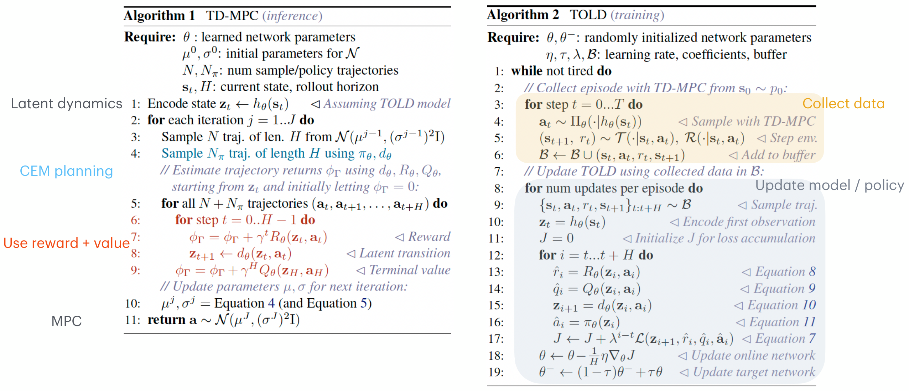
20. 결과 (Results)
같은 제목의 슬라이드 네 장이 TD-MPC의 실험 결과를 보여 줍니다 (출처: Hansen et al., ICML 2022). 앞의 세 장은 공통 불릿 하나를 반복합니다.
TD-MPC solves challenging continuous control problems (TD-MPC는 어려운 연속 제어 문제를 푼다)
20.1 어려운 연속 제어 과제들
첫 장은 세 과제의 장면입니다.
- Dog Run: 개 모양의 사지 로봇을 달리게 하는 과제
- Humanoid Run: 사람 모양 로봇을 달리게 하는 과제
- Hammer: 로봇 팔로 망치를 다루는 조작 과제
슬라이드는 무엇이 어려운지 따로 적지 않습니다. Dog Run과 Humanoid Run은 관절이 많은 몸 전체를 움직여야 하는 과제로 행동 차원이 높은 예로 읽히고, Hammer는 로봇 팔로 물체를 다루는 조작 과제입니다. 행동 차원이 높으면 무작위 탐험으로 의미 있는 움직임을 우연히 발견하기 어렵고, 15.2절에서 본 대로 계획의 탐색 공간도 커집니다.
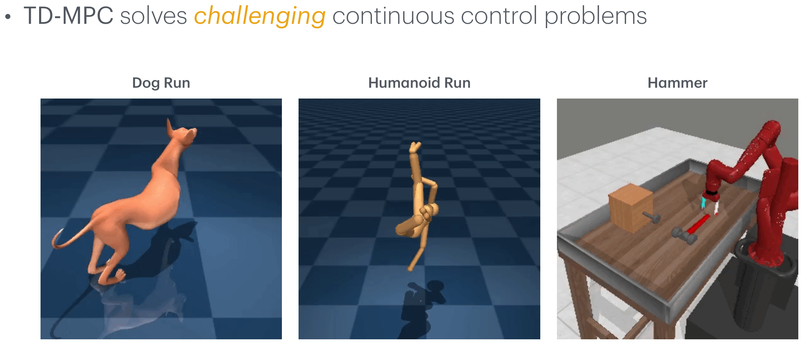
20.2 SAC와의 비교: Dog Run과 Humanoid Run
다음 두 장은 같은 과제에서 7회차의 SAC와 TD-MPC가 학습한 결과를 한 장면씩 나란히 보여 줍니다. 오른쪽(TD-MPC)에 슬라이드 33쪽과 같은 이미지가 다시 쓰였으므로, 34쪽은 Dog Run, 35쪽은 Humanoid Run의 비교입니다.
- Dog Run (34쪽): SAC의 개는 네 다리를 곧게 편 채 서 있는 자세이고, TD-MPC의 개는 뒷다리를 접고 몸을 웅크려 도약하는 자세입니다.
- Humanoid Run (35쪽): SAC의 사람 로봇은 몸이 옆으로 크게 꺾여 쓰러지는 듯한 자세이고, TD-MPC의 사람 로봇은 몸을 세운 채 팔을 들고 달리는 자세입니다.
정지 화면 한 장이지만, SAC는 달리기라는 과제의 형태조차 만들지 못한 반면 TD-MPC는 달리는 동작을 만들어 냈다는 차이가 드러납니다. 20.3절의 학습 곡선이 이를 수치로 확인해 줍니다.
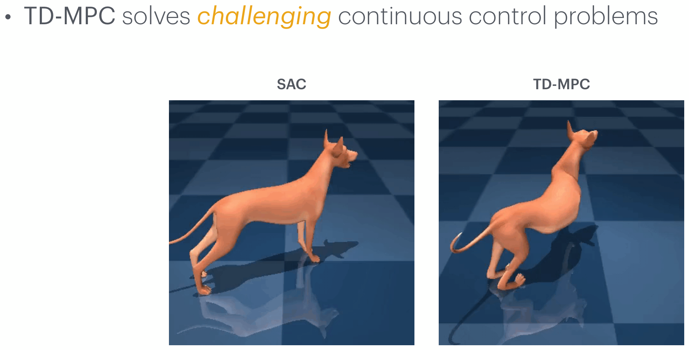
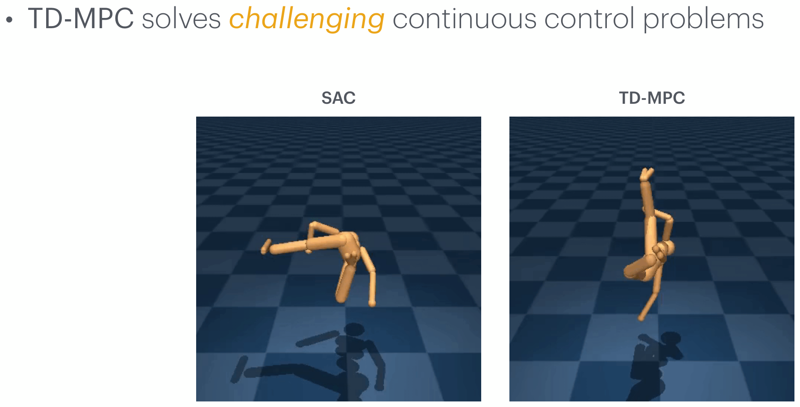
20.3 학습 곡선
넷째 장은 여섯 과제의 학습 곡선입니다. 가로축은 환경 스텝(Humanoid 과제는 \(3 \times 10^6\)까지, Dog 과제는 \(5 \times 10^6\)까지), 세로축은 에피소드 반환값이며, 세 방법을 비교합니다.
- SAC (파란 실선): 7회차의 모형 없는 오프폴리시 알고리즘
- TD-MPC (빨간 실선): 이번 절의 방법
- MPC:sim (검은 점선): 슬라이드는 설명하지 않지만, 이름으로 보아 학습된 모형 대신 시뮬레이터를 모형으로 써서 계획한 MPC로 읽히는 기준선입니다. 학습 과정이 없으므로 수평선으로 그려져 있습니다.
그래프 끝부분의 값을 대략 읽으면 다음과 같습니다.
| 과제 | TD-MPC | SAC | MPC:sim |
|---|---|---|---|
| Humanoid Stand | 약 920 | 약 650 | 약 415 |
| Humanoid Walk | 약 880 | 약 520 | 약 300 |
| Humanoid Run | 약 310 | 약 140 | 약 65 |
| Dog Walk | 약 935 | 약 130 (요동이 큼) | 약 850 |
| Dog Trot | 약 880 | 0 근처 | 약 470 |
| Dog Run | 약 525 | 약 30 | 약 305 |
- 여섯 과제 모두에서 TD-MPC가 가장 높고, 가장 빨리 오릅니다. 특히 Dog 과제에서는 TD-MPC가 대략 \(10^6\) 스텝 안팎에서 MPC:sim 수준을 넘어서는 반면, SAC는 \(5 \times 10^6\) 스텝이 지나도 거의 배우지 못합니다.
- TD-MPC가 MPC:sim을 넘는다는 점이 흥미롭습니다. MPC:sim이 위에서 읽은 대로 시뮬레이터로 짧은 지평만 계획하는 기준선이라면, 그것은 16절의 “국소 최적”에 머무는 반면 TD-MPC는 학습된 Q로 지평 너머까지 봅니다. 정확한 모형을 갖는 것보다 지평 너머를 보는 것이 더 중요할 수 있음을 시사하는 결과입니다.
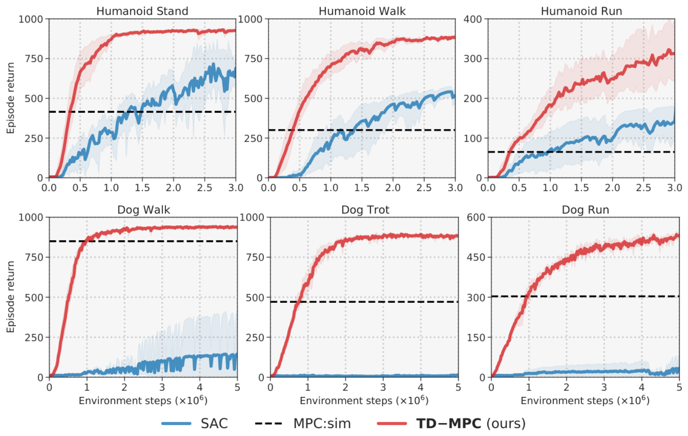
21. 절제 연구 (Ablation Study)
계획을 더 많이 할수록 성능이 좋아지는가? 슬라이드의 답은 “더 많은 계획 → 더 좋은 성능”입니다 (출처: Hansen et al., ICML 2022). Quadruped Walk 과제에서 계획의 두 축을 바꾸어 봅니다.
- 왼쪽 — 지평(Horizon) \(H\): 1, 3, 5, 7, 9
- 오른쪽 — CEM 반복 횟수: 1, 3, 5, 7, 9
그래프를 대략 읽으면 다음과 같습니다.
| 설정 | 1 | 3 | 5 | 7 | 9 |
|---|---|---|---|---|---|
| 지평 \(H\) | 약 725 | 약 862 | 약 930 | 약 945 | 약 938 |
| CEM 반복 | 약 700 | 약 928 | 약 932 | 약 925 | 약 931 |
- 지평: \(H = 1\)에서 약 725로 가장 낮고, \(H = 5\) 무렵까지 꾸준히 오른 뒤 포화됩니다. 주황 별표(Default)는 \(H = 5\)에 있습니다.
- CEM 반복: 1번에서 약 700이다가 3번부터 약 930으로 뛰어오른 뒤 거의 평평합니다. 주황 별표는 반복 6번 위치에 있습니다.
- 회색 X 표시(Policy): 두 그래프 모두에서 약 830입니다. 슬라이드는 설명하지 않지만, 범례 이름으로 보아 계획 없이 학습된 정책 \(\pi_\theta\)만으로 행동했을 때의 성능으로 읽힙니다. 지평 1이나 CEM 반복 1처럼 계획이 빈약하면 오히려 정책만 쓰는 것보다 못하고, 계획이 충분하면 정책을 확실히 넘어섭니다.
슬라이드 아래의 문장은 이 결과의 실용적 의미를 짚습니다.
Variable budget at test time (계산 예산을 테스트 시점에 조절할 수 있다)
학습이 끝난 뒤에도 지평과 CEM 반복 횟수는 자유롭게 바꿀 수 있습니다. 계산 여유가 있으면 더 많이 계획해 성능을 올리고, 빠른 반응이 필요하면 계획을 줄이거나 정책만 쓸 수 있습니다. 행동을 신경망 한 번의 계산으로 고정하는 모형 없는 강화학습의 정책에서는 기대할 수 없는 유연성입니다.
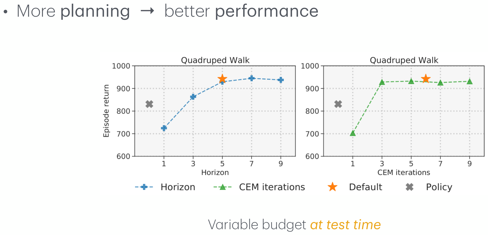
22. 사례 연구: TD-MPC2 (Case Study: TD-MPC2)
후속작 TD-MPC2의 결과입니다 (출처: Hansen et al., TD-MPC2: Scalable, Robust World Models for Continuous Control, ICLR 2024). 슬라이드 아래의 한 줄이 목표를 말합니다.
Scale TD-MPC to large models and multi-tasks (TD-MPC를 큰 모형과 다중 과제로 확장한다)
22.1 다중 과제: 모형을 키우면
왼쪽 그래프는 DMControl과 Meta-World의 80개 과제를 하나의 모형으로 학습했을 때, 모형 파라미터 수(가로축, 로그 척도)에 따른 정규화 점수(세로축)입니다.
| 파라미터 수 | 1M | 5M | 19M | 48M | 317M |
|---|---|---|---|---|---|
| TD-MPC2 (빨강) | 약 16 | 약 49 | 약 57 | 약 68 | 약 70 |
| TD-MPC (파랑) | 약 19 | 약 14 | 약 13 | 약 6 | — |
- TD-MPC2는 모형이 커질수록 성능이 오릅니다. 1M에서 317M까지 점수가 네 배 이상 늘어납니다.
- TD-MPC는 반대로 모형이 커질수록 성능이 떨어집니다. 1M에서는 두 방법이 비슷하지만, 그 뒤로 TD-MPC는 계속 내려갑니다.
모형을 키우면 성능이 오르는 성질이 원래의 TD-MPC에는 없었고, TD-MPC2가 이를 확보했다는 것이 이 그래프의 메시지입니다.
22.2 단일 과제: 여섯 도메인
오른쪽 여섯 패널은 각 도메인에서 과제마다 따로 학습했을 때의 점수로, SAC(회색), DreamerV3(보라), TD-MPC(파랑), TD-MPC2(빨강)를 비교합니다.
| 도메인 | 과제 수 | SAC | DreamerV3 | TD-MPC | TD-MPC2 |
|---|---|---|---|---|---|
| DMControl | 39 | 약 60 | 약 76 | 약 76 | 약 87 |
| Meta-World | 50 | 약 68 | 약 42 | 약 89 | 약 93 |
| ManiSkill2 | 5 | 약 35 | 약 21 | 약 54 | 약 87 |
| Locomotion | 7 | 약 3 | 약 24 | 약 76 | 약 88 |
| MyoSuite | 10 | 약 17 | 약 8 | 약 51 | 약 77 |
| Pick YCB | 1 | 0 근처 | 0 근처 | 0 근처 | 약 70 |
- 여섯 도메인 모두에서 TD-MPC2가 가장 높습니다. 특히 Pick YCB에서는 나머지 세 방법이 거의 0점인데 TD-MPC2만 약 70점을 얻습니다.
- 12절에서 여러 도메인을 휩쓴 DreamerV3가 여기서는 Meta-World, ManiSkill2, MyoSuite에서 SAC보다도 낮습니다. 이 비교가 연속 제어(for Continuous Control)를 겨냥한 TD-MPC2 논문의 벤치마크라는 점을 함께 고려해야 합니다.
DMControl과 Meta-World 패널은 세로축이 25에서 시작합니다. 그래서 막대의 길이 비율이 점수의 비율과 다릅니다. 예를 들어 Meta-World에서 DreamerV3(약 42)의 막대는 TD-MPC2(약 93)의 막대보다 네 배 가까이 짧아 보이지만, 점수 비율은 두 배 남짓입니다. 막대의 길이보다 눈금의 값으로 비교해야 합니다.
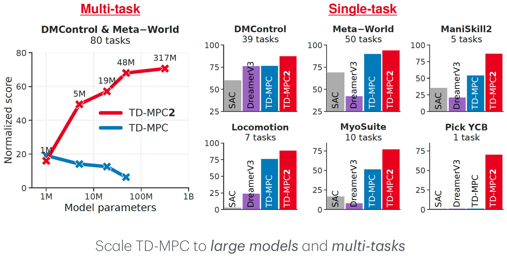
23. 요약 (Summary)
TD-MPC 부분의 요약 슬라이드입니다 (출처: Hansen et al., ICML 2022).
- TD-MPC는 모형 기반 계획(CEM-MPC)을 모형 없는 정책 최적화 및 시간차 학습(Q-학습)과 결합한다.
- (+) TD-MPC(와 TD-MPC2)는 행동 차원이 높은 문제에서 잘 작동하면서도 그리 느리지 않다. 슬라이드는 근거를 따로 들지 않지만, 20절의 Dog·Humanoid 과제가 행동 차원이 높은 예로 읽힙니다. “그리 느리지 않다”는 부분은 이번 슬라이드의 결과로는 확인되지 않습니다.
- (−) 고차원 관측(예: 픽셀)에서는 결과가 덜 인상적이다. 슬라이드는 이유를 적지 않지만, 재구성 없이 보상·가치·잠재 일관성만으로 표현을 배우는 구조를 생각하면, 이미지처럼 정보가 많은 관측에서 재구성으로 표현을 다지는 Dreamer와 대비되는 지점으로 볼 수 있습니다.
- 논문과 코드를 읽어 볼 것을 권한다!
- 구현이 매우 깔끔하고 단순하다.
- 논문이 잘 쓰여 있어 읽기 쉽다.
이번 강의의 두 알고리즘을 나란히 놓으면, 두 요약 슬라이드의 장단점이 서로를 비추고 있다는 것이 보입니다.
| 측면 | Dreamer (14절) | TD-MPC (23절) |
|---|---|---|
| 모형의 쓰임 | 상상 데이터 생성 (Dyna 방식) | 계획 (MPC) |
| 행동 선택 | 학습된 정책망 | 매 스텝 CEM 계획 (정책은 제안·표적값용) |
| 지평 너머 | 비평가 \(v_\psi\)와 \(\mathrm{V}_\lambda\) | 종단 가치 \(Q_\theta\) |
| 표현 학습 | 관측 재구성 + 보상 예측 | 보상 + 가치 + 잠재 상태 일관성 (재구성 없음) |
| 강점 | 고차원·다중 모달 관측 | 고차원 행동 |
| 약점 | 큰 모형, 느린 갱신, 복잡한 코드 | 픽셀 관측에서 상대적으로 약함 |
| 후속작의 성과 | DreamerV3: 단일 설정으로 여러 도메인 | TD-MPC2: 모형 크기와 다중 과제로 확장 |
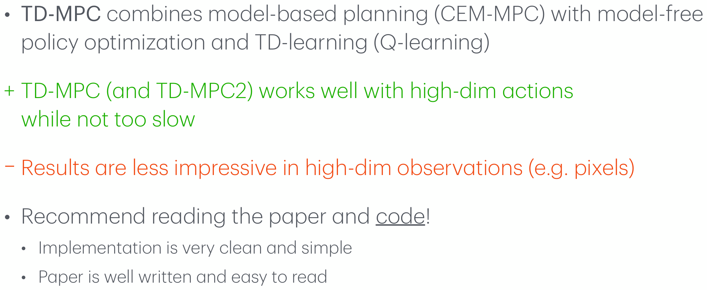
24. 다음 강의 (Next Class)
마지막 슬라이드는 다음 강의의 주제를 한 줄로 예고합니다 — AlphaGo.
정리하며 (Closing Remarks)
이번 강의의 논리 사슬을 한 장으로 요약하면 다음과 같습니다.
| 단계 | 내용 | 근거 |
|---|---|---|
| ① 출발점 | 학습된 모형으로 상상 롤아웃을 만들어 데이터를 불리되, 오차 누적과 상태 범위를 함께 고려하면 “데이터의 모든 상태에서 짧은 부분 궤적”이 답이다 | 2절 |
| ② Dyna | 실제 스텝마다 모형으로 \(K\)번의 Q 갱신을 덧붙이는 것이 모형 기반 데이터 증폭의 원형이다 | 3절 |
| ③ Dyna 방식 일반화 | 데이터의 상태에서 출발해 정책·데이터·무작위 행동으로 짧게 상상하고, 모형 없는 알고리즘이면 무엇으로든 학습한다 | 4절 |
| ④ 잠재 세계 모형 | 픽셀 관측에서는 이미지를 잠재 상태로 압축하고, 재구성과 보상 예측으로 그 잠재 상태를 학습한다 | 5–7절 |
| ⑤ 잠재 상상 학습 | 데이터의 모든 잠재 상태에서 길이 \(H\)의 상상 궤적을 굴려, \(\mathrm{V}_\lambda\)로 비평가를 회귀하고 학습된 동역학을 거슬러 오는 경사로 행위자를 갱신한다 | 8절 |
| ⑥ Dreamer의 성과 | V1은 픽셀 연속 제어에서 20배 데이터를 쓴 모형 없는 방법을 따라잡고, V2는 아타리에서 Rainbow를 넘으며, V3는 단일 설정으로 여덟 도메인의 전문가를 넘는다 | 9–13절 |
| ⑦ Dreamer의 대가 | 재구성 기반 표현은 고차원 관측에 강하지만 큰 모형과 느린 갱신을 요구한다 | 14절 |
| ⑧ MPC의 한계 | 다시 계획해 모형 오차를 바로잡지만, 계산 비용과 장기 모형 오차 때문에 짧은 지평에 묶인다 | 15절 |
| ⑨ 종단 가치 | 합을 \(t+H\)에서 자르고 꼬리를 \(Q\)로 대신하면, \(H\)스텝 계획이 전역 목적함수를 근사한다 | 16절 |
| ⑩ 과제 지향 잠재 동역학 | 재구성 없이 보상·가치(시간차)·잠재 상태 일관성(표적 인코더)만으로, 첫 관측에서 굴린 다단계 잠재 롤아웃 위에서 모형을 학습한다 | 17절 |
| ⑪ 정책의 두 역할 | 정책은 CEM에 행동 제안을 넣어 수렴을 돕고, 가치 표적값의 다음 행동을 계획 없이 공급한다 | 18절 |
| ⑫ TD-MPC | 추론은 \(\gamma\)-할인 보상 합 + \(\gamma^H Q\)로 점수를 매기는 잠재 공간 CEM-MPC, 학습은 \(\lambda^{i-t}\) 가중 다단계 손실과 지수 이동 평균 표적 갱신이다 | 19절 |
| ⑬ TD-MPC의 성과 | Dog·Humanoid에서 SAC와 MPC:sim 기준선을 넘고, 계획을 늘릴수록 성능이 오르며 그 양을 테스트 시점에 조절할 수 있다 | 20–21절 |
| ⑭ 확장 | TD-MPC2는 모형이 커질수록 다중 과제 성능이 오르고, 여섯 단일 과제 도메인에서 SAC·DreamerV3·TD-MPC를 넘는다 | 22절 |
| ⑮ 두 길의 대비 | Dreamer는 고차원 관측에, TD-MPC는 고차원 행동에 강하며, 둘 다 지평 너머를 학습된 가치에 맡긴다 | 14·23절 |